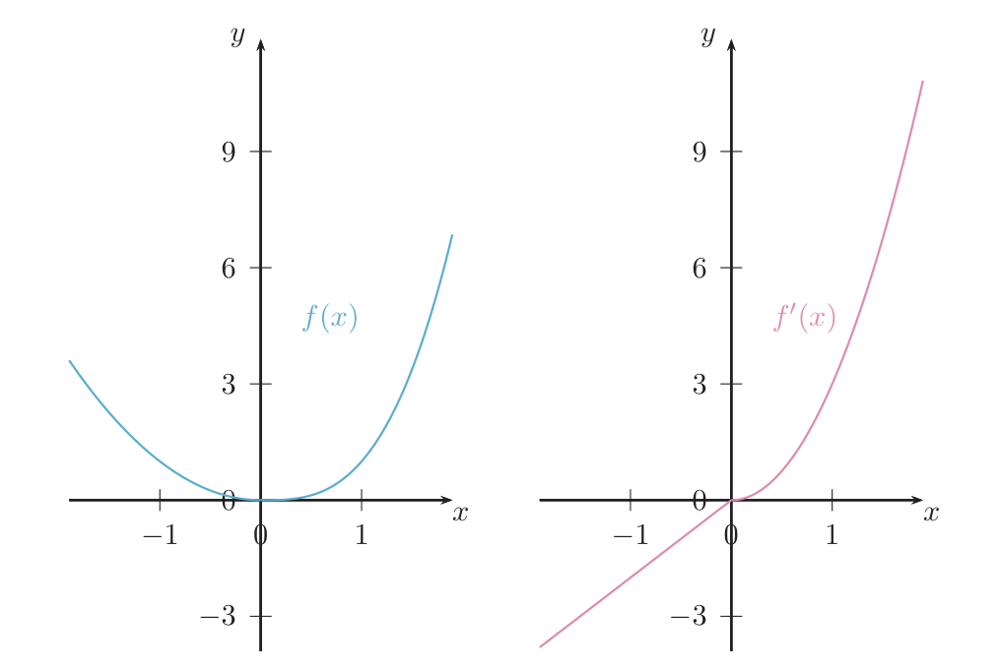
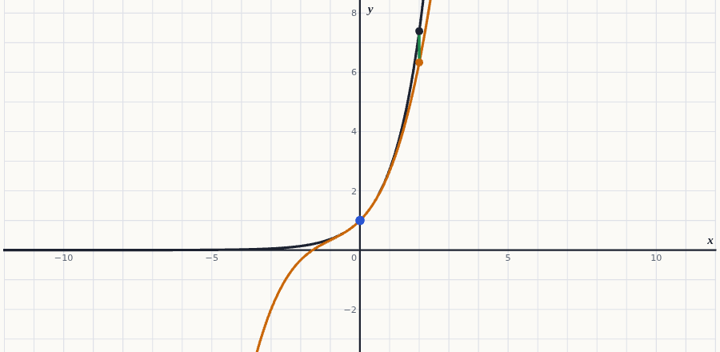
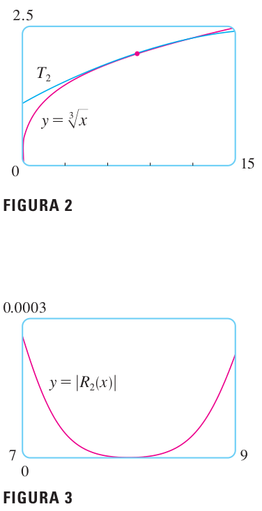
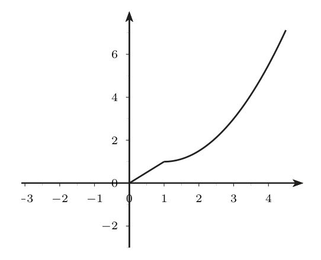

Módulo III · Aplicaciones de la derivada · Tema 3.1
El Teorema de Taylor
Cómo sustituir una función complicada, cerca de un punto, por un polinomio que se calcula con sumas y productos, y cómo saber cuánto te equivocas al hacerlo.
Libro oficial: Cálculo para Ingenieros, §3.1 (pp. 104-112)Complementos: Stewart §3.10 (pp. 250-253), §11.10-11.11 (pp. 753-777); Larson §9.7 (pp. 636-646)Ejercicios: E Ej. 3.1–3.14 (pp. 88-100)⏱ ~7 h de estudio
U oficial
S Stewart
L Larson
E ejercicios
P propio
X exámenes
— pasa el ratón (o toca) por cada etiqueta para ver libro y página; en pantallas anchas aparecen en el margen derecho.
La idea del tema en una frase
Una calculadora no sabe «hacer» $\operatorname{sen}0{,}5$ ni $\ln1{,}1$: solo suma, resta, multiplica y divide. Lo que sí sabe es evaluar polinomios. El Teorema de Taylor dice cómo construir, para una función $f$ y un punto $x_0$, un polinomio que se parece muchísimo a $f$ cerca de $x_0$, y da una fórmula del error que se comete. Aproximar sin saber el error no sirve de nada; aproximar con el error controlado es una herramienta de ingeniería.
Es como el plano de tu barrio: cerca de tu casa es casi exacto; cuanto más te alejas, peor, y el «resto» te dice cuánto puedes fiarte a cada distancia.
Si solo tienes un rato, llévate esto. El resto de la página lo desarrolla con ejemplos y ejercicios.
Método en 4 pasos
Identifica qué te piden: un polinomio $p_n$ (¿de qué orden y centrado en qué $x_0$?), las derivadas de $f$ a partir de $p_n$, el error o una cota, el orden $n$ o los $x$ donde vale la aproximación, o un límite $\tfrac00$.
Para el polinomio: si $f$ sale de $e^x$, $\operatorname{sen}$, $\cos$ o $\ln(1+x)$, sustituye, suma o multiplica desarrollos y trunca; si no, haz la tabla «$k$ | $f^{(k}(x_0)$ | $f^{(k}(x_0)/k!$», simplificando cada derivada antes de derivar la siguiente.
Para el error: escribe $R_n(x)=\frac{f^{(n+1}(c)}{(n+1)!}(x-x_0)^{n+1}$ con $c$ entre $x_0$ y $x$ (no se conoce); acota $|f^{(n+1}|\le M$ con el caso peor en todo ese intervalo y despeja lo que pidan.
Comprueba: el orden no es el grado (puede salir menor), no olvides el $k!$, el centro es $x_0$, y si $f^{(n+1}(x_0)=0$ puedes usar el resto $R_{n+1}$.
Qué hago según lo que piden
¿Calcular $p_n$ o recentrar un polinomio? $\to$ tabla de derivadas, o desarrollos conocidos; un polinomio coincide con su Taylor de orden $\ge$ grado.
¿Dan $p_n$ y piden $f^{(k}(x_0)$, o si «puede ser» el polinomio de Taylor? $\to$ coeficiente de $(x-x_0)^k$ por $k!$.
¿Valor aproximado con error, orden necesario o $x$ válidos? $\to$ Lagrange con el caso peor y despejar.
¿Límite $\tfrac00$ sin L'Hôpital? $\to$ forma de Peano: desarrollar hasta la potencia del denominador.
«Polinomio de Taylor/Mac Laurin de orden $n$»; recentrar un polinomio.
Coeficiente de $(x-x_0)^k$ $=\dfrac{f^{(k}(x_0)}{k!}$
De $p_n$ a las derivadas; «¿puede ser el polinomio de Taylor de $f$?».
$R_n(x)=\dfrac{f^{(n+1}(c)}{(n+1)!}(x-x_0)^{n+1}$, $c$ entre $x_0$ y $x$
Escribir el error de aproximar $f$ por $p_n$ (U Prop. 3.2).
$|R_n(x)|\le\dfrac{M}{(n+1)!}|x-x_0|^{n+1}$, con $|f^{(n+1}|\le M$
Valor con error, orden $n$ necesario, $x$ donde vale.
$f(x)=p_n(x)+o\big((x-x_0)^n\big)$ (Peano)
Sustituir desarrollos y calcular límites $\tfrac00$.
Qué cae
En los exámenes resueltos son preguntas cortas de 1 punto: calcular $p_n$ con una tabla de derivadas, leer los coeficientes de un $p_n$ dado, y escribir o acotar el resto de Lagrange. En el libro de ejercicios son E 3.1-3.14. Tabla completa por tipo: pestaña Examen.
U pp.104-112P
Camino de estudio: elige tu nivel
Empieza por «Mínimo»; luego «Completo» y, para nota alta, «Reto». Marca cada ejercicio al terminarlo.
Los apartados de polinomio de Taylor (2) y resto de Lagrange (3) y el mapa de decisión (apartado 5).
Un ejercicio de cada tipo:
E 3.1 (derivadas sucesivas), E 3.9 (calcular $p_n$), E 3.10 (recentrar), E 3.14 (error y valores de $x$), Examen 1 (escribir el resto), Examen 3 (tabla de derivadas), Examen 4 (de $p_n$ a las derivadas) y Examen 6 (orden $n$ con Lagrange).
Todo el tema (desmarca «Solo lo esencial»), con ampliaciones, el interactivo y la forma de Peano.
E 3.1-3.14, los 6 exámenes, los ejemplos propios y todas las prácticas.
🟣 Reto · ≈ +1 h
E 3.6 (derivadas de una función definida a trozos con L'Hôpital), E 3.12 (cota con $\ln\cos x$), E 3.13, Examen 5, los ejemplos propios B3 y C4 y las prácticas ★★.
Verás solo lo esencial; desmarca para ver todo.
0Antes de empezar U p.104
Qué necesitas saber ya U pp.79-80U pp.75, 81U p.82U p.96
Derivar con soltura: tabla de derivadas, producto, cociente y regla de la cadena (Tema 2.2). (U pp.79-80)
Definición de derivada como límite finito del cociente incremental y derivadas laterales. (U pp.75, 81)
Regla de L'Hôpital para límites $\tfrac00$ (aparece en E 3.6). (U p.82)
Teorema del valor medio: si $f$ es continua en $[a,b]$ y derivable en $(a,b)$, existe $c$ con $f(b)-f(a)=f'(c)(b-a)$. Es el caso más simple del teorema de esta unidad. (U p.96)
Mapa del tema: qué se pide en los ejercicios y en el examen E pp.88-100
Tres tipos: (A) calcular derivadas de varios órdenes, incluido dónde existen (E 3.1–3.6); (B) calcular polinomios de Taylor, recentrar polinomios y razonar sobre su grado (E 3.7–3.13); (C) acotar el error con el resto de Lagrange (E 3.12, 3.14).
1Derivadas sucesivas U pp.104-106
Lo que vas a aprender. a derivar varias veces sin perderte, a escribir la derivada $n$-ésima y a reconocer cuándo $f''$ no existe aunque $f$ y $f'$ sean continuas.
Cómo lo reconoces: «calcula $f''$, $f'''$, $f^{(n}$», «¿existe $f''(a)$?», o una función definida a trozos o «aparte» en un punto.
Qué haces: derivas por etapas, escribiendo y simplificando cada derivada completa. En un punto de unión miras primero la continuidad y usas la definición con límites laterales, primero para $f'$ y después, aplicada a $f'$, para $f''$.
Ejemplo mínimo: $g(x)=x|x|$ tiene $g'(x)=2|x|$ (continua) pero $\frac{g'(h)-g'(0)}{h}=\frac{2|h|}{h}$ tiene límites $\pm2$: no existe $g''(0)$.
Idea intuitiva
La derivada $f'$ es una función nueva, así que se puede volver a derivar. Si $f$ es la posición de un coche, $f'$ es su velocidad y $f''$ su aceleración; $f'''$ (el «tirón») cuenta cómo cambia la aceleración. Se pueden seguir derivando mientras haya derivada.
Definición
Si $f$ es derivable en un intervalo y $f'$ es derivable en $a$, la derivada segunda es $f''(a)=(f')'(a)$. Igual, $f'''=(f'')'$ y, en general, la derivada $n$-ésima $f^{(n}$ se obtiene derivando $n$ veces. Notación: $f^{(n}(x)=\dfrac{d^nf}{dx^n}(x)$. Se dice que $f$ es derivable $n$ veces (o de clase $C^n$ si además $f^{(n}$ es continua) cuando existen esas derivadas.
U pp.104, 106
Error típico: $f^{(4}$ no es $f^4$
El paréntesis marca derivar. $f^{(4}(x)$ es la derivada cuarta; $(f(x))^4$ es la potencia. Y «la derivada es $0$» no significa «no existe» (E 3.2 más abajo).
U p.105
Ejemplos de U (3.1 y 3.2)
Se calculan sucesivamente las derivadas de $3x^3$ (que se anulan a partir de la cuarta) y de $xe^{x^2}$ (cada una es un producto y una cadena, y crece en tamaño). Lección: escribe cada derivada completa y simplificada antes de derivar la siguiente.
U p.105
Cuando la derivada segunda no existe: el Ejemplo 3.3 de U
U toma una función pegada a trozos con una rama $x^2$ (a la izquierda) y otra $x^3$ (a la derecha) en $0$. Su derivada $f'$ vale $2x$ a la izquierda y $3x^2$ a la derecha, y $f'(0)=0$ por ambos lados: $f$ es derivable con $f'$ continua. Pero $f'$ tiene en $0$ un «pico»: pendiente $2$ por la izquierda y $0$ por la derecha, así que no existe $f''(0)$. Se ve en la gráfica.

Ejemplo 3.3 de U: $f$ y su derivada $f'$. La curva $f$ parece suave, pero $f'$ tiene un cambio brusco de pendiente en $0$. U p.106
Regla práctica para funciones a trozos
Fuera de los puntos de unión se deriva con las reglas de siempre. En un punto de unión hay que usar la definición (derivadas laterales), primero para $f'$ y luego, aplicada a $f'$, para $f''$. Hay derivada solo si los límites laterales son finitos e iguales.
U pp.81, 105-106
2El polinomio de Taylor U pp.107-110
Lo que vas a aprender. a construir el polinomio de Taylor de orden $n$ con una tabla, a no confundir orden con grado y a leer un polinomio de Taylor como una lista de derivadas.
Cómo lo reconoces: «polinomio de Taylor (o de Mac Laurin) de orden $n$ centrado en $x_0$», «escribe $P$ en potencias de $(x-x_0)$», «sabiendo que $p_n=\dots$, calcula $f^{(k}(x_0)$».
Qué haces: tabla «$k$ | $f^{(k}(x_0)$ | $f^{(k}(x_0)/k!$» y sumas los términos $\frac{f^{(k}(x_0)}{k!}(x-x_0)^k$; al revés, multiplicas cada coeficiente por $k!$.
Ejemplo mínimo: $e^x$ en $0$, orden $2$: todas las derivadas valen $1$, así que $p_2(x)=1+x+\frac{x^2}{2}$.
2.1 De la recta tangente a la parábola: la idea
Idea intuitiva: «copiar» a $f$ en un punto
Queremos un polinomio $p$ que imite a $f$ cerca de $x_0$. Se le exige que, en $x_0$, coincida con $f$ en valor y en derivadas sucesivas.
Mismo valor: $p(x_0)=f(x_0)$. Es la mejor constante.
Mismo valor y misma pendiente: $p(x)=f(x_0)+f'(x_0)(x-x_0)$. Es la recta tangente (la linealización de $f$ en $x_0$): misma altura y misma inclinación. Ejemplo: $\sqrt{x+3}\approx 2+\tfrac14(x-1)$ cerca de $x_0=1$, buena cerca de $1$ y mala lejos.
Además, misma curvatura: se añade $\frac{f''(x_0)}{2}(x-x_0)^2$ y sale una parábola que se curva igual que $f$.
Y así sucesivamente: cada término nuevo corrige lo que faltaba.
Analogía: es como ajustar una foto. Primero pones el centro en el sitio (valor), luego la inclinación (pendiente), luego cómo se dobla (segunda derivada), y cada corrección mejora el parecido cerca del centro, no lejos de él.
L pp.636-638S pp.256-257S pp.250-252S p.768
2.2 Polinomios centrados en $x_0$
Definición 3.1 · polinomio centrado en $x_0$
Decir que un polinomio está centrado en $x_0$ es escribirlo en potencias de $(x-x_0)$:
$$q(x)=a_0+a_1(x-x_0)+a_2(x-x_0)^2+\dots+a_n(x-x_0)^n .$$
Para recentrar un polinomio dado en potencias de $x$, se sustituye $x=(x-x_0)+x_0$ y se desarrolla (U Ej. 3.4): por ejemplo, $x^2+x+2=(x-2)^2+5(x-2)+8$.
U p.107
Proposición 3.1 · un polinomio se lee en sus derivadas
Sea $q$ un polinomio de grado $\le n$. Entonces, para cualquier $x_0\in\mathbb R$,
$$q(x)=\sum_{i=0}^{n}\frac{q^{(i}(x_0)}{i!}\,(x-x_0)^i\qquad\text{para todo }x\in\mathbb R.$$
Es decir, el coeficiente de $(x-x_0)^k$ es $\dfrac{q^{(k}(x_0)}{k!}$.
Ejemplo de U (3.5): si $p$ es de orden $3$ con $p(0)=1$, $p'(0)=0$, $p''(0)=6$, $p'''(0)=-6$, entonces $p(x)=1+0\,x+\frac{6}{2!}x^2-\frac{6}{3!}x^3=1+3x^2-x^3$.
U p.108
Definición 3.2 · polinomio de Taylor de orden $n$
Sea $f$ una función que tiene derivadas hasta el orden $n$ en $x_0$. Su polinomio de Taylor de orden $n$ centrado en $x_0$ es
$$p_n(x)=f(x_0)+f'(x_0)(x-x_0)+\frac{f''(x_0)}{2!}(x-x_0)^2+\dots+\frac{f^{(n}(x_0)}{n!}(x-x_0)^n=\sum_{k=0}^{n}\frac{f^{(k}(x_0)}{k!}(x-x_0)^k.\tag{3.1}$$
Si $x_0=0$ se llama polinomio de Mac Laurin. Es el único polinomio de grado $\le n$ con las mismas derivadas que $f$ en $x_0$ hasta el orden $n$ (por la Prop. 3.1).
U p.108L p.638S p.755
«Orden» no es «grado»
El grado de $p_n$ puede ser menor que $n$: si $f^{(n}(x_0)=0$ el último sumando desaparece (p. ej. $\cos x$ en $0$: $p_1(x)=1$, de grado $0$). Se ve con detalle en E 3.7.
S p.755U pp.108-109
2.3 Ejemplos básicos que hay que saberse
$e^x$ (U Ej. 3.6) y $\operatorname{sen}x$ (U Ej. 3.7) en el origen
$e^x$. Todas las derivadas son $e^x$, que en $0$ vale $1$. Por (3.1): $p_n(x)=1+x+\dfrac{x^2}{2!}+\dots+\dfrac{x^n}{n!}=\displaystyle\sum_{i=0}^n\frac{x^i}{i!}$.
$\operatorname{sen}x$. Las derivadas son $\cos x,-\operatorname{sen}x,-\cos x,\operatorname{sen}x,\dots$ (se repiten de 4 en 4); en $0$ valen $1,0,-1,0,\dots$ Solo sobreviven las potencias impares y con signos alternados: $p_{2n+1}(x)=x-\dfrac{x^3}{3!}+\dfrac{x^5}{5!}-\dots+(-1)^n\dfrac{x^{2n+1}}{(2n+1)!}$. Como $\operatorname{sen}^{(2n+2}(0)=0$, resulta $p_{2n+2}=p_{2n+1}$ (un ejemplo de «orden $\neq$ grado»).
$\cos x$ (por el mismo camino): $p_{2n}(x)=1-\dfrac{x^2}{2!}+\dfrac{x^4}{4!}-\dots+(-1)^n\dfrac{x^{2n}}{(2n)!}$.
U pp.108-109L pp.638, 640
Fuera del origen y por sustitución (U Ej. 3.8 y 3.9)
Ej. 3.8: $\operatorname{sen}x$ centrado en $\frac\pi4$, orden 3. Se evalúan las derivadas en $\frac\pi4$: $f=\frac1{\sqrt2}$, $f'=\frac1{\sqrt2}$, $f''=-\frac1{\sqrt2}$, $f'''=-\frac1{\sqrt2}$, luego $p_3(x)=\dfrac1{\sqrt2}+\dfrac1{\sqrt2}\big(x-\tfrac\pi4\big)-\dfrac{1/\sqrt2}{2!}\big(x-\tfrac\pi4\big)^2-\dfrac{1/\sqrt2}{3!}\big(x-\tfrac\pi4\big)^3$. Ej. 3.9: para $e^{x^2}$ no se deriva: se toma $p_n(u)=1+u+\dots+\frac{u^n}{n!}$ de $e^u$ y se sustituye $u=x^2$, lo que da $q_{2n}(x)=1+x^2+\frac{x^4}{2!}+\dots+\frac{x^{2n}}{n!}$. Ojo: sale de orden $2n$, no $n$ (así lo advierte U). Por qué vale: apartado 4 (unicidad y sustitución). Como $e^{x^2}$ es par no hay potencias impares, y resulta $q_7=q_6=1+x^2+\frac{x^4}{2}+\frac{x^6}{6}$. Caso análogo: L Ej. 6 ($\operatorname{sen}x$ en $\frac\pi6$, p. 640).
U p.110L pp.639-640
Truco de examen: tabla de dos columnas
Para calcular $p_n$ escribe una tabla «$f^{(k}(x)$ | $f^{(k}(x_0)$» para $k=0,\dots,n$, simplificando cada derivada antes de derivar la siguiente; los coeficientes son la segunda columna dividida entre $k!$. Comprueba siempre con paridad (si $f$ es par, solo habrá potencias pares) o con un desarrollo conocido.
2.4 Cómo se ve: más orden, mejor ajuste L p.641S pp.768-769

Interactivo propio. La curva negra es $f$ y la naranja es $p_n$ centrado en $a$ (punto azul). Sube el grado $n$: la zona donde se pegan se ensancha. Mueve el centro $a$ y la aproximación se desplaza con él. Lecciones: la aproximación es local y subir el orden ensancha la zona buena. El segmento verde es el error $R_n(x)=f(x)-p_n(x)$ en el punto $x$ elegido, y su valor sale debajo. Con $\ln(1+x)$ y $x$ lejos del centro (por ejemplo $a=0$, $x=3$) el error crece al subir $n$: la aproximación es solo local. Larson (Ej. 7, $\ln1{,}1$) y Stewart ($e^x$ en $x=0{,}2$ y $x=3$) lo comprueban con tablas. P
Recuadro de U: Taylor de un polinomio
Si $P$ es un polinomio, su polinomio de Taylor de orden $n$ en $x_0$ es lo que queda al escribir $P$ centrado en $x_0$ y quedarse con las potencias de grado $\le n$. En particular, si $n\ge\operatorname{grado}P$, el polinomio de Taylor es $P$. Ejemplo de U: para $f(x)=x^5+3x^4-x^2+1$, $p_3(x)=-x^2+1$ en el origen.
U p.112
3El resto y el Teorema de Taylor U pp.111-112
Lo que vas a aprender. a escribir el error de aproximar $f$ por $p_n$ y a convertirlo en una cota: el caso peor de $c$, el orden $n$ necesario o los valores de $x$ donde la aproximación vale.
Cómo lo reconoces: «error cometido», «con error menor que…», «¿qué orden hace falta?», «¿para qué $x$ vale la aproximación?».
Qué haces: escribes $R_n$ con $c$ entre $x_0$ y $x$, acotas $|f^{(n+1}(c)|\le M$ para todo $c$ posible, y o bien pruebas $n=0,1,2,\dots$ o bien despejas $|x-x_0|$.
Ejemplo mínimo: $\operatorname{sen}\frac12$ con $n=4$: $M=1$ y $|R_4(\frac12)|\le\frac{(1/2)^5}{5!}\approx0{,}00026<0{,}001$ (U Ej. 3.10).
Idea intuitiva: ¿cuánto me equivoco?
El polinomio $p_n$ no es exactamente $f$. La diferencia $R_n(x)=f(x)-p_n(x)$ es el resto (el error con signo). El Teorema de Taylor dice que el error tiene la forma del siguiente término del polinomio, pero con la derivada $(n+1)$-ésima evaluada en un punto desconocido $c$ entre $x_0$ y $x$. No conocemos $c$, pero sí el intervalo donde vive, y eso basta para acotar el error: nos ponemos en el caso peor.
Proposición 3.2 · Teorema de Taylor (forma de Lagrange del resto)
Sea $f$ una función tal que $f^{(n+1}$ está definida y es continua en un intervalo abierto $(a,b)$, y sea $x_0\in[a,b]$. Entonces, para cada $x\in(a,b)$ existe un punto $c$ entre $x_0$ y $x$ tal que
$$R_n(x)=f(x)-p_n(x)=\frac{f^{(n+1}(c)}{(n+1)!}\,(x-x_0)^{n+1}.$$
Ese segundo miembro es el resto de Lagrange de orden $n$ (Def. 3.3).
U p.111L p.642
Hipótesis y detalles que no hay que olvidar
U exige que $f^{(n+1}$ exista y sea continua en el intervalo $(a,b)$: es una hipótesis suficiente. Basta con menos: que $f^{(n}$ sea continua en el intervalo cerrado entre $x_0$ y $x$ y que exista $f^{(n+1}$ en el abierto (Larson, Teorema 9.19). Si falla, p. ej. $\sqrt[3]{x^2}$ en $0$ (no es derivable en $0$), el teorema no se puede aplicar.
El punto $c$ depende de $x$ y de $n$ y no se puede calcular. «Toma $c=x$» o «toma $c=0$» es un error: hay que acotar para todos los $c$ posibles.
Con $n=0$ el teorema dice $f(x)-f(x_0)=f'(c)(x-x_0)$: es el teorema del valor medio (U p.96). Taylor es su generalización a órdenes superiores.
L p.642S p.756
Método para acotar el error (4 pasos) U p.111S p.756
1 · Calcula $p_n$ y $f^{(n+1}$. Comprueba que $f^{(n+1}$ es continua en el intervalo relevante.
2 · Escribe el resto $R_n(x)=\dfrac{f^{(n+1}(c)}{(n+1)!}(x-x_0)^{n+1}$ con $c$ entre $x_0$ y $x$.
3 · Acota $|f^{(n+1}(c)|\le M$ con una constante $M$ que valga para todo $c$ posible (busca el caso peor).
4 · Concluye $|R_n(x)|\le\dfrac{M}{(n+1)!}|x-x_0|^{n+1}$ y despeja lo que pidan ($x$, $n$ o el error).
Ejemplo de U (3.10): $\operatorname{sen}\frac12$ con error menor que $0{,}001$
Para $f=\operatorname{sen}$ en $x_0=0$, todas las derivadas son $\pm\operatorname{sen}$ o $\pm\cos$, así que $|f^{(n+1}(c)|\le1$: $M=1$ para cualquier $n$.
Entonces $|R_n(\tfrac12)|\le\dfrac{(1/2)^{n+1}}{(n+1)!}$. Para $n=3$ la cota es $\frac{(1/2)^4}{4!}\approx0{,}0026>0{,}001$: no basta, por eso U sube a $n=4$, que da $\dfrac{(1/2)^5}{5!}\approx0{,}00026<0{,}001$.
Como $p_4=p_3=x-\frac{x^3}{6}$, se obtiene $\operatorname{sen}\tfrac12\approx\tfrac12-\tfrac1{48}=0{,}47916\ldots$ con error $<0{,}001$.
Observación: como $p_3=p_4$, el mismo polinomio admite dos restos ($R_3$ y $R_4$) y se puede usar el que dé mejor cota (ver ejemplo propio C0).
U pp.111-112L p.643
Ver el error S pp.769-774

Stewart aproxima $\sqrt[3]{x}$ por $T_2$ centrado en $8$. Arriba, las dos curvas; abajo, el error $|R_2(x)|$ en $[7,9]$: es casi $0$ junto al centro y crece hacia los extremos (menos de $0{,}0003$). Con la desigualdad de Taylor él obtiene la cota, algo más grande, $0{,}0004$. S p.770
La moraleja: la cota de Taylor es una garantía, no el error exacto, y puede ser pesimista (se ve en E 3.12 y 3.14).
4Puente: la forma de Peano y la notación $o$ P
Lo que vas a aprender. a obtener desarrollos sin derivar (sustituir, sumar y multiplicar truncando) y a calcular límites $\tfrac00$ con la forma de Peano del resto.
Cómo lo reconoces: «desarrolla $e^{x^2}$ o $e^x\operatorname{sen}x$», «calcula el límite sin L'Hôpital», $f=p_n+o(\cdot)$.
Qué haces: partes de los desarrollos conocidos, sustituyes o multiplicas, truncas al orden pedido y, en un límite, desarrollas hasta la potencia del denominador.
Ejemplo mínimo: $e^{x^2}=1+x^2+\frac{x^4}{2}+o(x^4)$ (sustituir $u=x^2$ en $e^u$; el orden se duplica).
Material del curso virtual
La notación de Landau se explica en el curso virtual. Lo que sigue es un puente propio, sin más herramientas que la Prop. 3.2 de U. Compara con las notas del Aula Virtual cuando las tengas.
Notación $o$-pequeña (Landau)
Decimos que $g(x)=o\big((x-x_0)^n\big)$ cuando $x\to x_0$ si $\displaystyle\lim_{x\to x_0}\frac{g(x)}{(x-x_0)^n}=0$. En palabras: $g$ es mucho más pequeña que $(x-x_0)^n$ cerca de $x_0$. Ejemplo: $x^3=o(x^2)$ cuando $x\to0$, porque $\frac{x^3}{x^2}=x\to0$.
P
Forma de Peano del resto
Si $f^{(n+1}$ es continua en un intervalo abierto que contiene a $x_0$, entonces
$$f(x)=p_n(x)+o\big((x-x_0)^n\big)\quad(x\to x_0),\qquad\text{es decir,}\qquad \lim_{x\to x_0}\frac{R_n(x)}{(x-x_0)^n}=0.$$
Prueba (con U). Tomamos $\delta>0$ con $[x_0-\delta,x_0+\delta]$ dentro del intervalo; como $f^{(n+1}$ es continua en ese intervalo cerrado, está acotada (Teorema de Weierstrass, U Prop. 1.15, pp. 52-53): $|f^{(n+1}|\le M$. Por la Prop. 3.2, para $0<|x-x_0|\le\delta$: $\left|\dfrac{R_n(x)}{(x-x_0)^n}\right|\le\dfrac{M}{(n+1)!}|x-x_0|\to0$.
P
Unicidad, suma y producto (lo que se usa en E 3.13 y en U Ej. 3.9)
Unicidad. Si $q$ es un polinomio de grado $\le n$ y $f(x)-q(x)=o((x-x_0)^n)$, entonces $q=p_n$. (La diferencia $d=p_n-q$ es un polinomio de grado $\le n$ con $d=o((x-x_0)^n)$. Si no fuera $0$, su primer coeficiente no nulo $c_k$ ($k\le n$) daría $d/(x-x_0)^k\to c_k\ne0$, pero también $d/(x-x_0)^k=o((x-x_0)^{n-k})\to0$; contradicción.) (Hipótesis sobre $f$: $f^{(n+1}$ continua cerca de $x_0$, para que valga la forma de Peano.) Consecuencia: cualquier procedimiento que dé un polinomio de grado $\le n$ con resto $o((x-x_0)^n)$ da el polinomio de Taylor. Sustitución: si $g(u)=p_n(u)+o(u^n)$ y se pone $u=x^2$, entonces $g(x^2)=p_n(x^2)+o(x^{2n})$; como $p_n(x^2)$ es un polinomio de grado $\le2n$, por la unicidad es el de orden $2n$ de $g(x^2)$ (si esta función cumple la hipótesis anterior, p. ej. $e^{x^2}$). Es lo que hace U en el Ej. 3.9.
Producto. $p_n^{fg}$ es el producto $p_n^f\,p_n^g$ truncado en grado $n$: los términos de grado mayor que $n$ y los productos con los restos son $o((x-x_0)^n)$, y se aplica la unicidad.
PE p.98
Límites con Taylor: receta y ejemplo
Receta. Si el denominador es $x^m$, desarrolla el numerador hasta la potencia $x^m$ con resto $o(x^m)$. Queda $ax^k+o(x^k)$ con $a\ne0$ (el primer término que no se cancela). El límite es $a$ si $k=m$, es $0$ si $k>m$ y no hay límite finito si $k
Ejemplo. $\displaystyle\lim_{x\to0}\frac{e^x-1-x}{x^2}$: con $e^x=1+x+\frac{x^2}{2}+o(x^2)$ el numerador es $\frac{x^2}{2}+o(x^2)$ y el cociente tiende a $\frac12$. Con L'Hôpital habría que derivar dos veces; es el límite que aparece al calcular $f'(0)$ en E 3.6.
Para sustituir, la variable $u$ debe tender a $0$ (por ejemplo $u=x^2$ o $u=-x^2$). Al sustituir $u=x^2$ el orden se duplica.
5Mapa de decisión: qué hago según lo que me piden P
Lo que vas a aprender. qué hacer según lo que te pidan (derivadas, polinomio, coeficientes, error, orden, $x$ válidos o límite) con un mapa de decisión y, desplegable, una tabla con el detalle de cada caso.
Léelo de arriba abajo: en cada pregunta, «no» baja a la siguiente y «sí» te lleva a la acción de la derecha. Al final, antes de aplicar, comprueba siempre que las derivadas que usas existen y son continuas: es lo que más puntos se pierde.
Ver la tabla con el detalle de cada caso
Piden…
Herramienta
Ojo con…
$f^{(n}$ de una función, o si existe
Derivar por etapas; definición con laterales en los puntos de unión
$f^{(4}\ne f^4$; «es $0$» no es «no existe»
$p_n$ de $f$ en $x_0$
Tabla $k\mid f^{(k}(x_0)\mid f^{(k}(x_0)/k!$
No olvidar $k!$; orden $\ne$ grado
$p_n$ de $e^{g(x)}$, de una suma o de un producto
Desarrollos conocidos: sustituir, sumar, multiplicar y truncar
$e^{x^2}$ con $n$ da orden $2n$; truncar el producto
Recentrar un polinomio
$\sum\frac{P^{(k}(x_0)}{k!}(x-x_0)^k$ o sustituir $x=(x-x_0)+x_0$
Comprobar con el otro método
De $p_n$ a $f^{(k}(x_0)$, o «¿puede ser?»
$f^{(k}(x_0)=k!\cdot$ coeficiente
Potencia ausente = derivada $0$; comparar solo lo conocido
Valor aproximado con error
$p_n(x)$ y $|R_n|\le\frac{M}{(n+1)!}|x-x_0|^{n+1}$
$c$ es desconocido: caso peor en todo el intervalo; la cota no es el error real
Orden $n$ para error $<\varepsilon$
Probar $n=0,1,2,\dots$ en la cota
Si $p_n=p_{n+1}$, probar con $R_{n+1}$
¿Para qué $x$ vale?
Despejar $|x-x_0|$ de $\frac{M}{(n+1)!}|x-x_0|^{n+1}<\varepsilon$
$M$ no puede depender de $c$; ojo al signo de $x$
Límite $\tfrac00$ sin L'Hôpital
$f=p_n+o((x-x_0)^n)$ (Peano)
Desarrollar hasta la potencia del denominador
Método en cinco pasos para el examen
Traduce lo que piden a una fila del mapa.
Fija el centro $x_0$ y el orden $n$ y escribe la fórmula que vas a usar ($p_n$ o $R_n$).
Calcula las derivadas (o parte de desarrollos conocidos) y simplifícalas antes de seguir.
Si hay error: acota $|f^{(n+1}(c)|$ en el caso peor, y despeja $n$, $x$ o el error.
Comprueba: $k!$, orden frente a grado, y una verificación independiente (paridad, otro método o un valor numérico).
P
6Practica P
Lo que vas a aprender. a resolver tú solo un ejemplo de cada tipo. Intenta cada uno antes de abrir la pista; empieza por los ★ (los ★★ son ampliación).
Ahora hazlo tú
Primero decide qué te piden: el polinomio (derivar y tabla, o combinar desarrollos conocidos), un valor con su error (Lagrange: caso peor de $f^{(n+1}(c)$), el orden $n$ o los $x$ válidos (despejar en la cota), o un límite (sustituir los desarrollos y quedarse con el primer término no nulo).
El polinomio de Taylor derivando (tabla)
★ Básico Práctica a1 · $\frac1x$ centrado en $2$ P
Calcula el polinomio de Taylor de orden $3$ de $f(x)=\dfrac1x$ centrado en $x_0=2$.
Pista
Escribe $f=x^{-1}$ y deriva tres veces: cada derivada multiplica por el exponente y lo baja en $1$. Evalúa en $2$ y divide entre $k!$.
Ver solución
Hipótesis: $f$ es derivable tantas veces como se quiera en $(0,\infty)$, que contiene a $2$; existe $p_3$ (U Def. 3.2, p.108).
★★ Medio Práctica a2 · Mac Laurin de $\operatorname{tg}x$: orden 4, grado 3 P
Calcula el polinomio de Mac Laurin de orden $4$ de $f(x)=\operatorname{tg}x$. ¿Qué grado tiene?
Pista
Escribe todas las derivadas en función de $t=\operatorname{tg}x$ usando $(\operatorname{tg}x)'=1+\operatorname{tg}^2x$: así cada derivada es un polinomio en $t$ por $(1+t^2)$, y en $x=0$ basta poner $t=0$.
Ver solución
Hipótesis: $\operatorname{tg}$ es derivable infinitas veces en $(-\frac\pi2,\frac\pi2)$, que contiene a $0$ (U Def. 3.2, p.108).
Derivadas (con $t=\operatorname{tg}x$ y $t'=1+t^2$, regla de la cadena, U p.79): $f'=1+t^2$; $f''=2t(1+t^2)=2t+2t^3$; $f'''=(2+6t^2)(1+t^2)=2+8t^2+6t^4$; $f^{(4}=(16t+24t^3)(1+t^2)$.
En $0$ ($t=0$): $f(0)=0$, $f'(0)=1$, $f''(0)=0$, $f'''(0)=2$, $f^{(4}(0)=0$.
Grado: el último coeficiente es $0$, así que el polinomio de orden $4$ tiene grado $3$ (E Ej. 3.7). Era de esperar: $\operatorname{tg}$ es impar, y en una función impar solo aparecen potencias impares.
Resultado: $p_4(x)=x+\frac{x^3}{3}$ (orden $4$, grado $3$)
Del polinomio a las derivadas, y Taylor de un polinomio
★ Básico Práctica b1 · leer las derivadas en el polinomio P
El polinomio de Taylor de orden $3$ de una función $f$ centrado en $x_0=2$ es $p_3(x)=3-(x-2)+5(x-2)^3$. Calcula $f(2)$, $f'(2)$, $f''(2)$ y $f'''(2)$, y aproxima $f(2{,}1)$.
Pista
El coeficiente de $(x-2)^k$ es $\frac{f^{(k}(2)}{k!}$. Una potencia que no aparece tiene coeficiente $0$.
Ver solución
Forma general (U Def. 3.2, p.108): $p_3(x)=f(2)+f'(2)(x-2)+\frac{f''(2)}{2!}(x-2)^2+\frac{f'''(2)}{3!}(x-2)^3$.
Igualar coeficientes (mismo centro, mismas potencias): $f(2)=3$; $f'(2)=-1$; $\frac{f''(2)}{2}=0$, luego $f''(2)=0$; $\frac{f'''(2)}{6}=5$, luego $f'''(2)=30$.
Aproximar: con $x-2=0{,}1$, $p_3(2{,}1)=3-0{,}1+5\cdot0{,}001=2{,}905$. Sin más datos sobre $f^{(4}$ no podemos acotar el error.
En $1$: $P(1)=0$, $P'(1)=-2$, $P''(1)=6$, $P'''(1)=24$, $P^{(4}(1)=24$.
Coeficientes $\frac{P^{(k}(1)}{k!}$ (U p.108): $0,\ -2,\ 3,\ 4,\ 1$.
Orden 2: $p_2(x)=-2(x-1)+3(x-1)^2$ (sin término constante porque $P(1)=0$).
Orden 4: $p_4(x)=-2(x-1)+3(x-1)^2+4(x-1)^3+(x-1)^4$. Como el orden ($4$) llega al grado de $P$, es el propio $P$ escrito en potencias de $(x-1)$ (U Prop. 3.1, p.108, y recuadro de U p.112). Comprobación: $x=0$ da $-2(-1)+3-4+1=2=P(0)$.
Observación: $p_2$ es $p_4$ truncado: el Taylor de un polinomio se obtiene recentrándolo y quedándose con las potencias $\le n$.
Sin derivar: sustituir y multiplicar desarrollos conocidos
★ Básico Práctica c1 · $\operatorname{sen}(x^2)$ sustituyendo P
Calcula el polinomio de Mac Laurin de orden $6$ de $f(x)=\operatorname{sen}(x^2)$ sin derivar, y deduce $f^{(6}(0)$.
Pista
Haz como U con $e^{x^2}$ (Ej. 3.9): toma el desarrollo de $\operatorname{sen}u$ y pon $u=x^2$. Cada potencia $u^k$ se convierte en $x^{2k}$, así que el orden se duplica.
Ver solución
Desarrollo conocido (U Ej. 3.7, p.109): $\operatorname{sen}u=u-\frac{u^3}{6}+o(u^4)$ (el de orden $3$ es también el de orden $4$, porque $\operatorname{sen}^{(4}(0)=0$).
Sustituir $u=x^2$ (U Ej. 3.9, p.110; justificación en §4, sustitución): $\operatorname{sen}(x^2)=x^2-\frac{x^6}{6}+o(x^8)$.
Por la unicidad (§4), $x^2-\frac{x^6}6$ es el polinomio de orden $6$ (y también de orden $7$ y $8$).
Derivada sin derivar: el coeficiente de $x^6$ es $\frac{f^{(6}(0)}{6!}=-\frac16$, luego $f^{(6}(0)=-\frac{720}{6}=-120$. Derivar seis veces $\operatorname{sen}(x^2)$ a mano sería larguísimo.
★★ Medio Práctica c2 · $e^x\cos x$ multiplicando (y $f^{(4}(0)$ gratis) P
Calcula el polinomio de Mac Laurin de orden $4$ de $f(x)=e^x\cos x$ multiplicando desarrollos conocidos, y deduce $f^{(4}(0)$. Comprueba un coeficiente derivando.
Pista
Multiplica $1+x+\frac{x^2}2+\frac{x^3}6+\frac{x^4}{24}$ por $1-\frac{x^2}2+\frac{x^4}{24}$, pero calcula solo los términos de grado $\le4$: agrupa por potencias.
Ver solución
Desarrollos de orden 4 (U Ej. 3.6, p.108; $\cos$: propio B1): $e^x$: $1+x+\frac{x^2}2+\frac{x^3}6+\frac{x^4}{24}$; $\cos x$: $1-\frac{x^2}2+\frac{x^4}{24}$.
Comprobación: $e^{-0{,}2}=0{,}818730\ldots$; el error real es $0{,}00127$, dentro de la cota.
Resultado: $e^{-0{,}2}\approx0{,}82$, con error $<\frac{1}{750}\approx0{,}0013$
★★ Medio Práctica d2 · $\sqrt[3]{28}$ centrando en $27$ P
Aproxima $\sqrt[3]{28}$ con el polinomio de Taylor de orden $2$ de $f(x)=\sqrt[3]x$ centrado en un punto adecuado y acota el error.
Pista
Centra donde la raíz cúbica sea exacta y esté cerca de $28$: $x_0=27$. Para la cota, $f'''$ es decreciente en $(27,28)$; su mayor valor está en el extremo izquierdo.
Ver solución
Derivadas: $f=x^{1/3}$, $f'=\frac13x^{-2/3}$, $f''=-\frac29x^{-5/3}$, $f'''=\frac{10}{27}x^{-8/3}$ (continua en $(0,\infty)$: se puede usar U Prop. 3.2, p.111).
En $27$ ($27^{1/3}=3$): $f(27)=3$, $f'(27)=\frac1{3\cdot9}=\frac1{27}$, $f''(27)=-\frac2{9\cdot243}=-\frac2{2187}$, con coeficiente $-\frac1{2187}$.
Resultado: $\sqrt[3]{28}\approx\frac{6641}{2187}\approx3{,}036580$, con error $<\frac{5}{531441}\approx9{,}4\cdot10^{-6}$
¿Qué orden hace falta?
★ Básico Práctica e1 · el número $e$ con error $<10^{-3}$ P
¿Qué orden $n$ del polinomio de Mac Laurin de $e^x$ garantiza calcular $e$ con error menor que $10^{-3}$? Da la aproximación.
Pista
Con $x=1$: $|R_n(1)|=\frac{e^c}{(n+1)!}$, $c\in(0,1)$. No puedes usar el valor de $e$ que buscas, pero sí $e^c<e<3$.
Ver solución
Resto (U Prop. 3.2, p.111): $R_n(1)=\frac{e^c}{(n+1)!}\cdot1^{n+1}$ con $c\in(0,1)$.
Caso peor: $e^c<e^1<3$, así que $|R_n(1)|<\frac3{(n+1)!}$.
Probar $n$: hace falta $(n+1)!>3000$. $n=5$: $6!=720$, cota $\frac3{720}\approx0{,}0042$, no basta. $n=6$: $7!=5040$, cota $\approx0{,}0006<10^{-3}$, basta.
Valor (U Ej. 3.6): $p_6(1)=1+1+\frac12+\frac16+\frac1{24}+\frac1{120}+\frac1{720}=\frac{1957}{720}\approx2{,}71806$. Real: $e=2{,}718282\ldots$, error $2{,}3\cdot10^{-4}$.
★★ Medio Práctica e2 · $\ln0{,}8$: el caso peor está en el otro extremo P
Usando el polinomio de Mac Laurin de $\ln(1+x)$, calcula $\ln0{,}8$ con error menor que $10^{-3}$. ¿Qué orden necesitas?
Pista
$\ln0{,}8=\ln(1-0{,}2)$, así que $x=-0{,}2$ y $c\in(-0{,}2;0)$. Ahora $1+c<1$: el factor $\frac1{(1+c)^{n+1}}$ es mayor que $1$; su caso peor es $c$ cerca de $-0{,}2$.
Ver solución
Derivadas (propio A2): $f^{(n+1}(x)=\frac{(-1)^n\,n!}{(1+x)^{n+1}}$, continua en $(-1,\infty)$.
Resto (U Prop. 3.2, p.111): $|R_n(-0{,}2)|=\frac{n!}{(n+1)!}\cdot\frac{0{,}2^{n+1}}{(1+c)^{n+1}}=\frac1{n+1}\Big(\frac{0{,}2}{1+c}\Big)^{n+1}$.
Caso peor: $c>-0{,}2$ da $1+c>0{,}8$, luego $\frac{0{,}2}{1+c}<\frac{0{,}2}{0{,}8}=\frac14$ y $|R_n|<\frac{(1/4)^{n+1}}{n+1}$.
Probar $n$: $n=2$: $\frac1{64\cdot3}=\frac1{192}\approx0{,}0052$, no basta. $n=3$: $\frac1{256\cdot4}=\frac1{1024}\approx0{,}00098<10^{-3}$, basta.
★ Básico Práctica f1 · $\frac{x-\operatorname{sen}x}{x^3}$ P
Calcula $\displaystyle\lim_{x\to0}\frac{x-\operatorname{sen}x}{x^3}$ con el Teorema de Taylor (sin L'Hôpital).
Pista
Escribe $\operatorname{sen}x=x-\frac{x^3}6+R_4(x)$ con el resto de Lagrange (se puede usar $R_4$ porque $p_3=p_4$) y sustituye.
Ver solución
Desarrollo con resto (U Ej. 3.7, p.109, y Prop. 3.2, p.111): $\operatorname{sen}x=x-\frac{x^3}6+\frac{\cos c}{5!}x^5$, con $c$ entre $0$ y $x$ (como $\operatorname{sen}^{(4}(0)=0$, $p_3=p_4$ y el resto es el de orden $4$, que lleva $\operatorname{sen}^{(5}=\cos$).
Límite: $\big|\frac{\cos c}{120}x^2\big|\le\frac{x^2}{120}\to0$, así que el límite es $\frac16$. Con la notación de §4: $x-\operatorname{sen}x=\frac{x^3}6+o(x^3)$.
Resultado: $\frac16$
★★ Medio Práctica f2 · $\frac{e^{x^2}-\cos x-\frac32x^2}{x^4}$ P
Comprobación: el error real llega a $10^{-3}$ en $|x|\approx0{,}1818$: la cota es casi exacta. Con $R_1=-\frac{\operatorname{sen}c}{2}x^2$ saldría solo $|x|<0{,}0447$.
Resultado: $|x|<\sqrt[3]{0{,}006}\approx0{,}1817$
★★ Medio Práctica g2 · $\sqrt{1+x}\approx1+\frac x2$ en un intervalo P
Se aproxima $\sqrt{1+x}$ por $1+\frac x2$. (a) Acota el error para todo $x\in[-0{,}1;0{,}1]$. (b) ¿Para qué $x\ge0$ se puede asegurar error menor que $0{,}01$?
Pista
Es $p_1$ en $0$. $f''(x)=-\frac1{4(1+x)^{3/2}}$: su valor absoluto es mayor cuanto menor es $1+c$. En (a), $c$ puede acercarse a $-0{,}1$; en (b), $c>0$.
Ver solución
Polinomio: $f(0)=1$, $f'(x)=\frac1{2\sqrt{1+x}}$, $f'(0)=\frac12$: $p_1(x)=1+\frac x2$ (U p.108).
Resto (U Prop. 3.2, p.111; $f''$ continua en $(-1,\infty)$): $R_1(x)=\frac{f''(c)}{2}x^2=-\frac{x^2}{8(1+c)^{3/2}}$, $c$ entre $0$ y $x$.
(a) Caso peor en el intervalo: para $x\in[-0{,}1;0{,}1]$, $c>-0{,}1$ y $1+c>0{,}9$; además $x^2\le0{,}01$. Usando a la vez el mayor numerador y el menor denominador: $|R_1|<\frac{0{,}01}{8\cdot0{,}9^{3/2}}=\frac{\sqrt{10}}{2160}\approx0{,}0015$. (El error real máximo, en $x=-0{,}1$, es $0{,}0013$.)
(b) Con $x\ge0$: $c>0$, $(1+c)^{3/2}>1$ y $|R_1|<\frac{x^2}8$. Despejar: $\frac{x^2}8<0{,}01\iff x^2<0{,}08\iff x<\sqrt{0{,}08}=\frac{\sqrt2}5\approx0{,}283$.
Comprobación: en $x=0{,}283$ el error real es $0{,}0088<0{,}01$.
Resultado: en $[-0{,}1;0{,}1]$ el error es $<\frac{\sqrt{10}}{2160}\approx0{,}0015$; para $x\ge0$ basta $0\le x<\frac{\sqrt2}{5}\approx0{,}283$
7Errores típicos y autoevaluación P
Lo que vas a aprender. a detectar tus fallos antes del examen: 10 preguntas rápidas; cada una es un error típico, con su explicación al responder.
1. (V/F) El polinomio de Taylor de orden $4$ de una función siempre tiene grado $4$.
Grado $\le4$: si $f^{(4}(x_0)=0$, el término de $(x-x_0)^4$ desaparece. Por ejemplo, $\operatorname{tg}x$ en $0$ tiene $p_4=x+\frac{x^3}3$, de grado $3$ (U p.108; E Ej. 3.7).
2. (Elige) Si $f(1)=2$, $f'(1)=0$, $f''(1)=6$, el polinomio de Taylor de orden $2$ de $f$ en $1$ es:
El coeficiente de $(x-1)^2$ es $\frac{f''(1)}{2!}=3$ (U Def. 3.2, p.108). La (a) olvida dividir entre $2!$; la (b) y la (d) usan potencias de $x$ en vez de $(x-1)$.
3. (Elige) El resto de Lagrange de $p_2$ centrado en $0$ es:
$R_n=\frac{f^{(n+1}(c)}{(n+1)!}(x-x_0)^{n+1}$ con $c$ entre $x_0$ y $x$ (U Prop. 3.2, p.111): con $n=2$, derivada tercera, $3!$ y $x^3$. La (a) es el último término de $p_2$ (con $c$); la (c) evalúa en $0$, que sería el término siguiente de $p_3$, no el error; la (d) olvida el factorial.
4. (V/F) En el resto de Lagrange, el punto $c$ es el mismo para todos los $x$ del intervalo, y por eso basta con calcularlo una vez.
$c$ depende de $x$ y no se conoce: solo se sabe que está entre $x_0$ y $x$ (U p.111). Por eso se acota $|f^{(n+1}(c)|$ por su caso peor en todo ese intervalo, en vez de calcular $c$.
5. (Elige) Al aproximar $\ln(1+x)$ en $x=-0{,}2$ aparece el factor $\frac1{(1+c)^4}$ con $c\in(-0{,}2;0)$. ¿Por qué número se acota?
El caso peor es el denominador más pequeño: $1+c>0{,}8$, luego $\frac1{(1+c)^4}<\frac1{0{,}8^4}$. La (b) solo vale si $c>0$; para $c<0$ el factor es mayor que $1$ y la «cota» sería falsa.
6. (Elige) Sustituyendo $u=x^2$ en el polinomio de Mac Laurin de orden $3$ de $e^u$ se obtiene el de $e^{x^2}$ de orden:
$1+x^2+\frac{x^4}2+\frac{x^6}6$ tiene potencias hasta $x^6$ y el resto es $o(x^6)$: es el de orden $6$ (U Ej. 3.9, p.110: «ojo, de orden $2n$»).
7. (V/F) El polinomio de Mac Laurin de orden $2$ de $e^x\operatorname{sen}x$ es el producto completo $(1+x+\frac{x^2}2)\,x$.
Ese producto es $x+x^2+\frac{x^3}2$, de grado $3$: hay que truncar en grado $2$ y queda $x+x^2$ (§4, producto truncado). Además el término de $x^3$ estaría mal: faltaría el $-\frac{x^3}6$ del seno.
8. (V/F) Si la cota de Lagrange da $|R_3(x)|\le0{,}01$, el error real al aproximar $f(x)$ por $p_3(x)$ es $0{,}01$.
La cota garantiza que el error no pasa de $0{,}01$; el real puede ser mucho menor (en E Ej. 3.12 la cota es $2{,}36$ y el error real no llega a $0{,}12$). Por eso «para qué $x$ vale» da un intervalo garantizado, no el intervalo exacto.
9. (V/F) Si $P$ es un polinomio de grado $3$, su polinomio de Taylor de orden $5$ centrado en cualquier $x_0$ es el propio $P$.
$P^{(4}$ y $P^{(5}$ son $0$, y por la Prop. 3.1 (U p.108) $P=\sum_{k=0}^3\frac{P^{(k}(x_0)}{k!}(x-x_0)^k$. Si el orden fuera menor que $3$, habría que truncar (U p.112).
10. (Elige) Para calcular $\displaystyle\lim_{x\to0}\frac{\cos x-1+\frac{x^2}2}{x^4}$ con Taylor, ¿hasta qué potencia hay que desarrollar $\cos x$?
Hasta la potencia del denominador: $\cos x=1-\frac{x^2}2+\frac{x^4}{24}+o(x^4)$ y el límite es $\frac1{24}$. Con solo $x^2$ el numerador quedaría $o(x^2)$, que no dice nada al dividir entre $x^4$; más allá de $x^4$ no hace falta.
8Ejercicios del libro, resueltos E pp.88-100
Se mantiene la numeración de E, pero se agrupan en bloques según lo que enseñan: A (derivadas sucesivas), B (polinomio de Taylor) y C (resto y cotas de error). Cada ejercicio muestra el enunciado, «Antes de calcular» y la receta; la resolución paso a paso está desplegable. Al final van los ejemplos propios y los de la autoevaluación de U.
$p_3$ y cota del error de $\ln(\cos x)$ en $(-1,1)$
C
Bloque A · Derivadas sucesivas
★ BásicoEjercicio 3.2 · $f^{(4}$ de un polinomio de grado 2E p.88
Sea $f(x)=3x^2-x+1$. Entonces: a) $f^{(4}(x)=(f(x))^4$; b) $f^{(4}(x)=0$; c) $f^{(4}(x)$ no existe; d) ninguna.
Ver solución paso a paso
Antes de calcular
Qué me piden
Decidir cuál de las cuatro afirmaciones sobre la derivada cuarta de $f(x)=3x^2-x+1$ es verdadera.
Cómo lo pienso
Cada derivada baja un grado al polinomio. Con grado 2, tras tres derivadas ya no queda nada: es el polinomio cero, que sí existe y vale $0$.
Qué uso
$p^{(n}\equiv n!\,a_n$ y todas las siguientes son $0$ — ver teoría (U p.105).
Por dónde empiezo
Derivo $f$ cuatro veces seguidas, escribiendo cada una.
Receta: cada derivada baja un grado al polinomio; si el grado es $n$ con coeficiente principal $a_n$, $p^{(n}\equiv n!\,a_n$ (aquí $f''=2!\cdot3=6$) y las siguientes son $0$. «Es $0$» no es «no existe».
Ver resolución completa paso a paso
Leer la notación. $f^{(4}$ es derivar cuatro veces, no la potencia cuarta. Descarta a).
¿Existe? Un polinomio es derivable en todo $\mathbb R$ y su derivada es otro polinomio, así que existen todas las derivadas. Descarta c).
★ BásicoMínimoEjercicio 3.1 · derivada tercera de $\operatorname{sen}(x^2+\frac\pi5)$E p.88
Calcula la derivada tercera de $f(x)=\operatorname{sen}\!\left(x^2+\frac{\pi}{5}\right)$.
Ver solución paso a paso
Antes de calcular
Qué me piden
La derivada tercera de $\operatorname{sen}(x^2+\frac\pi5)$, como expresión en $x$.
Cómo lo pienso
Es una función compuesta: cada vez que derivo aparece el factor de lo de dentro ($2x$) y, además, $2x$ no es constante, así que hay producto. Lo seguro es ir por etapas y simplificar cada derivada antes de seguir.
Qué uso
Regla de la cadena y del producto, derivando por etapas — ver teoría (U pp.79, 105).
Por dónde empiezo
Llamo $u=x^2+\frac\pi5$ (con $u'=2x$) y calculo $f'=2x\cos u$.
Receta: derivar por etapas, escribiendo cada derivada completa y agrupada; llamar $u$ a lo de dentro para no olvidar el factor $u'$.
Ver resolución completa paso a paso
Llamamos $u=x^2+\frac\pi5$, con $u'=2x$.
Primera (cadena): $f'(x)=2x\cos u$.
Segunda. $f'$ es un producto, así que derivamos con la regla del producto y, dentro, con la cadena ($(\cos u)'=-2x\operatorname{sen}u$): $f''(x)=2\cos u-4x^2\operatorname{sen}u$.
Tercera. Cada sumando por separado: $(2\cos u)'=-4x\operatorname{sen}u$ y $(-4x^2\operatorname{sen}u)'=-8x\operatorname{sen}u-8x^3\cos u$.
Agrupar: $\boxed{f'''(x)=-12x\operatorname{sen}\!\left(x^2+\tfrac\pi5\right)-8x^3\cos\!\left(x^2+\tfrac\pi5\right)}$. Coincide con E.
Error típico: olvidar $u'=2x$ de la cadena en la 2.ª y 3.ª derivada, o derivar $2x\cos u$ como si $2x$ fuera constante.
Señale la opción correcta para $f(x)=\sqrt{|x|}$: a) $f'$ es positiva en $(-\infty,0)$; b) $f'$ es positiva en $\mathbb R$; c) $f$ es derivable en $\mathbb R$; d) $f''$ es negativa en $(-\infty,0)\cup(0,+\infty)$.
Ver solución paso a paso
Antes de calcular
Qué me piden
Decir cuál de las cuatro afirmaciones sobre el signo de $f'$, $f''$ y la derivabilidad de $\sqrt{|x|}$ es cierta.
Cómo lo pienso
La función es $\sqrt x$ a la derecha y su «espejo» $\sqrt{-x}$ a la izquierda, con un pico vertical en $0$. A la izquierda baja (pendiente negativa); en $0$ la pendiente se dispara, así que ahí no hay derivada.
Qué uso
Derivadas laterales en el punto de unión — ver teoría (U pp.75-81, 105).
Por dónde empiezo
Reescribo $f$ sin valor absoluto, por trozos ($x\ge0$ y $x<0$).
Receta: reescribir por trozos, derivar con reglas dentro de cada trozo y usar derivadas laterales en la unión (regla práctica de §1).
Ver resolución completa paso a pasoEn $x=0$ la gráfica tiene un pico con tangente vertical: $f$ no es derivable ahí. Pasa el ratón por la gráfica (o toca; o usa ← →) para leer las coordenadas. P
Quitar el valor absoluto: $f(x)=\sqrt x$ si $x\ge0$ y $f(x)=\sqrt{-x}$ si $x<0$.
Derivada fuera de $0$ (cadena): $f'(x)=\dfrac1{2\sqrt x}$ si $x>0$ y $f'(x)=\dfrac{-1}{2\sqrt{-x}}$ si $x<0$. Luego $f'<0$ en $(-\infty,0)$: a) y b) son falsas.
En $0$ (cambia la fórmula, se usan laterales): $f'(0^+)=\lim_{h\to0^+}\frac{\sqrt h}{h}=\lim_{h\to0^+}\frac1{\sqrt h}=+\infty$ y $f'(0^-)=\lim_{h\to0^-}\frac{\sqrt{-h}}{h}=\lim_{h\to0^-}\frac{-1}{\sqrt{-h}}=-\infty$ (si $h<0$, $h=-\sqrt{-h}\sqrt{-h}$). No son finitos: no es derivable en $0$ (tangente vertical). c) es falsa.
Segunda derivada fuera de $0$. Para $x>0$: $f''=-\frac14x^{-3/2}<0$. Para $x<0$: $f''=-\frac14(-x)^{-3/2}<0$.
Respuesta: d).
Error típico: creer que $f'(0)$ existe porque $f$ es continua en $0$ (la continuidad es necesaria, no suficiente), u olvidar el signo $-1$ de la cadena en $\sqrt{-x}$.
Para $f(x)=\dfrac{x^2-1}{x}$ si $x\ne0$ y $f(0)=0$, calcula $f'$ y $f''$ en todos los puntos donde sea posible.
Ver solución paso a paso
Antes de calcular
Qué me piden
Calcular $f'$ y $f''$ en todos los puntos donde existan, para una función con $f(0)=0$ definida «a parte».
Cómo lo pienso
Fuera de $0$ es una fracción normal y se deriva con reglas. En $0$ la gráfica se va a $\pm\infty$ (salta), así que no puede haber tangente: sin continuidad no hay derivada.
Qué uso
Derivable $\Rightarrow$ continua, así que sin continuidad no hay $f'$ — ver teoría (U pp.76, 79).
Por dónde empiezo
Simplifico $\frac{x^2-1}{x}=x-\frac1x$ y derivo para $x\ne0$; después miro el límite en $0$.
Receta: antes de la definición en un punto conflictivo, mira si $f$ es continua ahí. Si no lo es, se acabó: no hay derivada, ni de orden 1 ni superior.
Ver resolución completa paso a pasoPara $x\ne0$, $f(x)=x-\frac1x$ tiene una asíntota vertical en $x=0$; por eso no hay $f'(0)$ aunque se defina $f(0)=0$. Pasa el ratón por la gráfica (o toca; o usa ← →) para leer las coordenadas. P
$x\ne0$. Simplificamos: $f(x)=x-\frac1x$, luego $f'(x)=1+\frac1{x^2}=\frac{x^2+1}{x^2}$ y $f''(x)=-\frac2{x^3}$.
En $x=0$, primero la continuidad (si no es continua, no es derivable): $\lim_{x\to0^+}(x-\frac1x)=-\infty$ y $\lim_{x\to0^-}(x-\frac1x)=+\infty$. No hay límite, así que $f$ no es continua en $0$ y no existe $f'(0)$.
$f''(0)$ tampoco: derivar $f'$ en $0$ exige que $f'(0)$ exista.
Comprobación con la definición: $\frac{f(h)-f(0)}{h}=1-\frac1{h^2}\to-\infty$.
Error típico: derivar la fórmula y «evaluarla en $0$», o creer que $f'(0)$ existe porque $f(0)=0$ está definido.
Para $f(x)=\dfrac{e^x-1}{x}$ si $x\ne0$ y $f(0)=1$, calcula $f'$ y $f''$ donde sea posible.
Ver solución paso a paso
Antes de calcular
Qué me piden
Calcular $f'$ y $f''$ de $\frac{e^x-1}{x}$ (con $f(0)=1$) también en $x=0$.
Cómo lo pienso
Fuera de $0$ se deriva como un cociente; en $0$ la fórmula no vale, así que hay que ir a la definición como límite del cociente incremental, que sale de tipo $\frac00$. Para $f''(0)$ se repite el proceso aplicado a $f'$.
Qué uso
Cociente incremental + L'Hôpital, y repetir con $f'$ — ver teoría (U pp.75, 82, 106).
Por dónde empiezo
Calculo $f'(x)$ para $x\ne0$ con la regla del cociente y luego el límite que define $f'(0)$.
Receta: función definida aparte en $a$: $f'(a)$ con el cociente incremental y L'Hôpital para el $\frac00$; para $f''(a)$ se repite con $f'$ y el valor $f'(a)$ recién obtenido.
Mismo método que E 3.4 y U Ej. 3.3 (punto de unión).
Ver resolución completa paso a pasoLa curva es suave en $0$ si definimos $f(0)=1$, que es su límite ($\lim_{x\to0}\frac{e^x-1}{x}=1$). Pasa el ratón por la gráfica (o toca; o usa ← →) para leer las coordenadas. P
$f'$ para $x\ne0$ (cociente): $f'(x)=\dfrac{xe^x-e^x+1}{x^2}$.
$f'(0)$ por definición. $f'(0)=\lim_{h\to0}\dfrac{\frac{e^h-1}{h}-1}{h}=\lim_{h\to0}\dfrac{e^h-1-h}{h^2}$, de tipo $\frac00$. Aplicamos L'Hôpital (numerador y denominador derivables y $2h\ne0$): $\lim_{h\to0}\frac{e^h-1}{2h}\overset{\text{L'H}}{=}\lim_{h\to0}\frac{e^h}{2}=\frac12$. Luego $f'(0)=\frac12$.
$f''$ para $x\ne0$. Con $N=xe^x-e^x+1$, $N'=xe^x$: $f''(x)=\dfrac{x^2e^x-2xe^x+2e^x-2}{x^3}$ (tras dividir por $x\neq0$).
$f''(0)$ por definición, aplicada a $f'$ (con $f'(0)=\frac12$): $f''(0)=\lim_{h\to0}\dfrac{f'(h)-\frac12}{h}=\lim_{h\to0}\dfrac{2he^h-2e^h+2-h^2}{2h^3}$ ($\frac00$). L'Hôpital: la derivada del numerador es $2he^h-2h$ y la del denominador $6h^2$, así que queda $\lim_{h\to0}\frac{2h(e^h-1)}{6h^2}=\lim_{h\to0}\frac{e^h-1}{3h}\overset{\text{L'H}}{=}\frac13$. (Simplificar $h$ no es L'Hôpital.)
Resultado: $f'(0)=\frac12$, $f''(0)=\frac13$; $f$ es dos veces derivable en $\mathbb R$.
Comprobación con Taylor: $\frac{e^x-1}{x}=1+\frac x2+\frac{x^2}{6}+\dots$ sugiere $f'(0)=\frac12$ y $\frac{f''(0)}{2!}=\frac16$, es decir, $f''(0)=\frac13$. Coincide.
Error típico: calcular $f''(0)$ como $\lim_{x\to0}f''(x)$: aquí da lo mismo, pero no es la definición. Y aplicar L'Hôpital sin comprobar el $\frac00$.
Teoría: U pp.75, 82, 108.
★★ MedioEjercicio 3.5 · posición, velocidad y aceleración desde la gráfica de $f'$E pp.91-92
La altura de un objeto en función del tiempo es $f$. La gráfica de $f'$ es la de la figura. ¿Qué puedes decir de la posición, la velocidad y la aceleración?

Gráfica de $f'$ (la velocidad). E p.91
Ver solución paso a paso
Antes de calcular
Qué me piden
Describir la posición, la velocidad y la aceleración de un objeto a partir de la gráfica de $f'$.
Cómo lo pienso
La gráfica que me dan es la de la velocidad. El signo de $f'$ dice si la altura sube o baja; la pendiente de la gráfica de $f'$ es la aceleración $f''$; y un pico en la gráfica de $f'$ es un punto sin $f''$.
Qué uso
$f'>0\Rightarrow f$ creciente y $f''=(f')'$ — ver teoría (U pp.98, 105).
Por dónde empiezo
Leo la velocidad en $t=0$ y su signo para $t>0$.
Receta: el signo de $f'$ dice si $f$ sube o baja; la pendiente de $f'$ es $f''$; donde la gráfica de $f'$ tiene un pico no existe $f''$.
Ver resolución completa paso a paso
Velocidad ($f'$, se lee directamente). Vale $0$ en $t=0$, es positiva para $t>0$ y creciente.
Posición ($f$). Como $f'>0$ para $t>0$, $f$ es estrictamente creciente: el objeto sube (U Prop. 2.4). Como $f'$ crece, $f$ es convexa (U Prop. 3.9, que se estudia en §3.5): sube cada vez más deprisa.
Aceleración ($f''$ = pendiente de la gráfica de $f'$). En $(0,1)$ el segmento tiene pendiente $1$: $f''=1$. En $t=1$ las laterales son $f''(1^-)=1$ y $f''(1^+)=0$ (la curva sale horizontal): no existe $f''(1)$, como en U Ej. 3.3. Para $t>1$ la pendiente crece desde $0$: aceleración positiva y creciente.
Interpretación: un cohete que cambia de propulsor en $t=1$.
Error típico: confundir la gráfica dada (de $f'$) con la de $f$ y decir «la altura crece linealmente hasta $t=1$»: lo que crece linealmente es la velocidad.
Teoría: U pp.98, 105, 136.
Bloque B · El polinomio de Taylor
★ BásicoEjercicio 3.7 · ¿el polinomio de Taylor de orden $n$ tiene grado $n$?E p.93
Razona si es cierto o falso que el polinomio de Taylor de orden $n$ centrado en $x_0$ de una función $f$ es un polinomio de grado $n$.
Ver solución paso a paso
Antes de calcular
Qué me piden
Decidir si $p_n$ siempre tiene grado exactamente $n$.
Cómo lo pienso
El último término de $p_n$ lleva $f^{(n}(x_0)$; si esa derivada vale $0$, el término desaparece y el grado baja.
Qué uso
$p_n(x)=\sum\frac{f^{(k}(x_0)}{k!}(x-x_0)^k$: el último término lleva $f^{(n}(x_0)$ — ver teoría (U p.108).
Por dónde empiezo
Escribo el término de mayor potencia y busco una función con $f^{(n}(x_0)=0$ (un contraejemplo).
Receta: «orden $n$» = se usan derivadas hasta la $n$; el grado es el de la última derivada no nula en $x_0$.
Ver resolución completa paso a paso
Su término de mayor potencia es $\frac{f^{(n}(x_0)}{n!}(x-x_0)^n$.
Si $f^{(n}(x_0)\ne0$, el grado es $n$; si $f^{(n}(x_0)=0$, ese término desaparece y el grado es menor.
Contraejemplo: $f=\cos x$, $x_0=0$, $n=1$: $f(0)=1$, $f'(0)=0$, luego $p_1(x)=1$, de grado $0$. (También $p_2=p_1=x$ para $\operatorname{sen}x$, U Ej. 3.7.)
FALSO. Lo correcto: grado $\le n$.
Teoría: U pp.108-109.
★ BásicoEjercicio 3.11 · Taylor de un polinomioE pp.96-97
Razona si es cierto o falso que el polinomio de Taylor centrado en $x_0$ de un polinomio $P(x)$ coincide con $P(x)$.
Ver solución paso a paso
Antes de calcular
Qué me piden
Decidir si el polinomio de Taylor de un polinomio $P$ es siempre el propio $P$.
Cómo lo pienso
Si me quedo corto en el orden, se «trunca» y pierdo términos; si el orden llega al grado de $P$, no hay nada que perder y se recupera $P$ entero.
Qué uso
Taylor de un polinomio = recentrar y truncar — ver teoría (U p.112).
Por dónde empiezo
Pruebo con $P=x^2$ y orden $1$ para ver que no siempre.
Receta: Taylor de un polinomio de grado $m$: se centra en $x_0$ y se trunca en la potencia $n$; si $n\ge m$ se recupera el propio polinomio.
Ver resolución completa paso a paso
Tal cual (sin decir el orden), es FALSO. Contraejemplo: $P=x^2$, $x_0=0$, orden $1$: $p_1=0\ne x^2$.
Cuándo es cierto: orden $n\ge$ grado $m$ de $P$. Por la Prop. 3.1, $P=\sum_{i=0}^m\frac{P^{(i}(x_0)}{i!}(x-x_0)^i=p_m$; y para $i>m$, $P^{(i}\equiv0$, así que $p_n=p_m=P$. Con el Teorema de Taylor: $R_n=\frac{P^{(n+1}(c)}{(n+1)!}(x-x_0)^{n+1}=0$ porque $P^{(n+1}\equiv0$.
Si $n<m$, $p_n$ es $P$ centrado en $x_0$ truncado a las potencias $\le n$ (recuadro de U p.112).
Teoría: U pp.108, 111-112.
★ BásicoMínimoEjercicio 3.10 · recentrar $x^3-x^2+x-2$ en $x_0=1$E p.96
Escribe $P(x)=x^3-x^2+x-2$ en potencias enteras no negativas de $(x-1)$ utilizando el polinomio de Taylor.
Ver solución paso a paso
Antes de calcular
Qué me piden
Reescribir $x^3-x^2+x-2$ como polinomio en potencias de $(x-1)$.
Cómo lo pienso
Es «cambiar de centro»: el mismo polinomio, dicho desde $x=1$. Como tiene grado 3, su Taylor de orden 3 centrado en $1$ es él mismo.
Qué uso
Un polinomio coincide con su Taylor de orden $\ge$ grado: coeficientes $\frac{P^{(k}(x_0)}{k!}$ — ver teoría (U pp.107-108).
Por dónde empiezo
Calculo $P(1),P'(1),P''(1),P'''(1)$.
Receta: dos caminos para recentrar: (a) coeficientes $\frac{P^{(k}(x_0)}{k!}$; (b) sustituir $x=(x-x_0)+x_0$ y desarrollar. Usa uno y comprueba con el otro.
Ver resolución completa paso a paso
$P$ tiene grado $3$, así que $P=p_3$ centrado en $1$ (Ej. 3.11).
Derivadas en $1$: $P(1)=-1$; $P'=3x^2-2x+1\Rightarrow P'(1)=2$; $P''=6x-2\Rightarrow P''(1)=4$; $P'''=6$.
Coeficientes $\frac{P^{(k}(1)}{k!}$: $-1,\ 2,\ \frac42=2,\ \frac66=1$. Por tanto $\boxed{P(x)=-1+2(x-1)+2(x-1)^2+(x-1)^3}$.
Comprobación por el otro método (U Ej. 3.4): con $t=x-1$, $(t+1)^3-(t+1)^2+(t+1)-2=t^3+2t^2+2t-1$. Coincide.
Error típico: olvidar dividir entre $k!$ (poner $4(x-1)^2$ en vez de $2(x-1)^2$).
Teoría: U pp.107-108.
★ BásicoMínimoEjercicio 3.9 · Mac Laurin de orden 3 de $\ln(x^2+1)$E p.95
Calcula el polinomio de Taylor de orden 3 centrado en $0$ de $f(x)=\ln(x^2+1)$.
Ver solución paso a paso
Antes de calcular
Qué me piden
El polinomio de Taylor de orden 3 de $\ln(x^2+1)$ centrado en $0$.
Cómo lo pienso
Método de siempre: derivar, evaluar en $0$ y dividir entre $k!$. La función es par, así que las derivadas impares se anulan en $0$ y salen pocos términos.
Qué uso
$p_3(x)=\sum_{k=0}^3\frac{f^{(k}(0)}{k!}x^k$ — ver teoría (U p.108; sustitución en U Ej. 3.9, p.110).
Por dónde empiezo
Calculo $f',f'',f'''$ simplificando cada una antes de derivar la siguiente.
Receta: tabla «$f^{(k}(x)$ | $f^{(k}(x_0)$», simplificando antes de derivar; después los coeficientes $\frac{f^{(k}(x_0)}{k!}$.
Ver resolución completa paso a pasoCerca del origen $f$ y $p_3(x)=x^2$ casi coinciden; al alejarse $p_3$ sube más deprisa. Pasa el ratón por la gráfica (o toca; o usa ← →) para leer las coordenadas. P
Derivadas (simplificando cada una): $f'=\dfrac{2x}{x^2+1}$; $f''=\dfrac{2-2x^2}{(x^2+1)^2}$; $f'''=\dfrac{4x(x^2-3)}{(x^2+1)^3}$ (tras simplificar un factor $x^2+1$).
En $0$: $f(0)=0$, $f'(0)=0$, $f''(0)=2$, $f'''(0)=0$.
Polinomio: $p_3(x)=\frac{2}{2!}x^2=\boxed{x^2}$: grado $2$ con orden $3$ (Ej. 3.7).
Comprobación sin derivar (sustitución, U Ej. 3.9): $\ln(1+u)=u-\frac{u^2}2+o(u^2)$; con $u=x^2$ queda $x^2-\frac{x^4}{2}+o(x^4)$, que es el desarrollo de orden $4$ (por la unicidad del apartado 4; ojo, orden $2n$ y no $n$). La parte de grado $\le3$ es $x^2$.
Teoría: U pp.108, 110.
★★ MedioEjercicio 3.8 · ¿puede ser el polinomio de Taylor de $f$?E pp.94-95
De $f$, dos veces derivable, se sabe $f'(0)=2$ y $f''(-3)=6$. ¿Puede ser alguno de estos el polinomio de Taylor de orden 2 de $f$ centrado en $0$? ¿Y centrado en $-3$? a) $1-x+\frac{x^2}{2}$; b) $\pi^2+(x-3)^2$; c) $2x+3(x+3)^2$.
Ver solución paso a paso
Antes de calcular
Qué me piden
Decidir si tres polinomios dados pueden ser el de Taylor de orden 2 de $f$, centrado en $0$ o en $-3$, conociendo solo $f'(0)=2$ y $f''(-3)=6$.
Cómo lo pienso
Cada coeficiente de un polinomio de Taylor es una derivada dividida entre $k!$. Solo puedo descartar un candidato si contradice un dato que conozco; lo demás «puede ser».
Qué uso
Coeficiente de $(x-a)^k$ $=\frac{f^{(k}(a)}{k!}$, comparado solo con lo que se conoce — ver teoría (U pp.107-108).
Por dónde empiezo
Escribo cada candidato en potencias de $x$ y de $(x+3)$ y comparo con $f'(0)=2$ y con $\frac{f''(-3)}{2}=3$.
Receta: escribe el polinomio en potencias de $(x-a)$ y compara cada coeficiente con $\frac{f^{(k}(a)}{k!}$ solo donde conozcas $f^{(k}(a)$.
Ver resolución completa paso a paso
Idea. Centrado en $0$, el coeficiente de $x$ debe ser $f'(0)=2$. Centrado en $-3$, el coeficiente de $(x+3)^2$ debe ser $\frac{f''(-3)}{2}=3$. De los demás coeficientes no sabemos nada: «puede ser» = «no contradice los datos». Lema útil: al recentrar un polinomio de grado 2, el coeficiente del término cuadrático no cambia.
a) Centrado en $0$: el coeficiente de $x$ es $-1\ne2$, no. Centrado en $-3$: el cuadrático es $\frac12\ne3$, no.
b) Centrado en $0$: $\pi^2+(x-3)^2=(\pi^2+9)-6x+x^2$, coeficiente de $x$ es $-6\ne2$, no. Centrado en $-3$: cuadrático $=1\ne3$, no.
c) Centrado en $-3$: $2x=2(x+3)-6$, luego $2x+3(x+3)^2=-6+2(x+3)+3(x+3)^2$; cuadrático $3$: sí puede (con $f(-3)=-6$, $f'(-3)=2$). Centrado en $0$: $27+20x+3x^2$, coeficiente de $x$ es $20\ne2$: no.
Resumen: solo c), y solo centrado en $-3$.
Moraleja: el polinomio de Taylor es local; centrado en puntos distintos da polinomios distintos.
Error típico: comparar sin recentrar (en c, decir «el coeficiente de $x$ es 2» y concluir que vale en $0$, cuando $3(x+3)^2$ también aporta términos en $x$).
Teoría: U pp.107-108.
★★ MedioEjercicio 3.13 · Taylor de una suma y de un productoE pp.98-99
Sabiendo que el polinomio de Taylor de orden 3 centrado en $-1$ de $g(x)=e^x$ es $p(x)=e^{-1}\big(1+(x+1)+\frac{(x+1)^2}{2!}+\frac{(x+1)^3}{3!}\big)$, obtén el de orden 3 centrado en $-1$ de $f(x)=x+e^x$ y de $h(x)=(x+1)e^x$.
Ver solución paso a paso
Antes de calcular
Qué me piden
Obtener el polinomio de orden 3 en $-1$ de $x+e^x$ y de $(x+1)e^x$ a partir del de $e^x$.
Cómo lo pienso
No hace falta derivar de nuevo: el Taylor de una suma es la suma de Taylors, y el de un producto es el producto de Taylors cortado en el orden pedido.
Qué uso
Suma de Taylors y producto truncado — ver teoría (U p.110; E 3.13).
Por dónde empiezo
Para $f$, escribo $x=-1+(x+1)$ y sumo; para $h$, multiplico $p(x)$ por $(x+1)$.
Receta: con funciones construidas a partir de otras cuyo Taylor ya conocemos: sumar, multiplicar y truncar, o sustituir. Comprueba al menos un coeficiente derivando.
Ver resolución completa paso a paso
Usamos dos propiedades: (S) el polinomio de una suma es la suma de polinomios; (P) el de un producto es el producto truncado en grado $n$.
$f=x+e^x$. El de $x$ es $x=-1+(x+1)$. Por (S): $\boxed{p_3^f(x)=(e^{-1}-1)+(1+e^{-1})(x+1)+\tfrac{e^{-1}}2(x+1)^2+\tfrac{e^{-1}}6(x+1)^3}$.
$h=(x+1)e^x$. Multiplicamos $(x+1)\,p(x)=e^{-1}\big((x+1)+(x+1)^2+\frac{(x+1)^3}{2}+\frac{(x+1)^4}{6}\big)$ y quitamos el grado $4$: $\boxed{p_3^h(x)=e^{-1}\big((x+1)+(x+1)^2+\tfrac{(x+1)^3}{2}\big)}$.
Comprobación derivando (solo con U). Para $f$: $f'=1+e^x$, $f''=f'''=e^x$; en $-1$: $-1+e^{-1},\ 1+e^{-1},\ e^{-1},\ e^{-1}$; dividiendo entre $k!$ se recuperan los coeficientes. Para $h$: $h^{(k}(x)=(x+1+k)e^x$ (ejemplo A1); en $-1$: $0,\ e^{-1},\ 2e^{-1},\ 3e^{-1}$; coeficientes $0,\ e^{-1},\ e^{-1},\ \frac{e^{-1}}2$. ✓
Error típico: no truncar (dejar $(x+1)^4$), o truncar antes de multiplicar y perder términos.
Encuentra valores de $x\ge0$ para los que se pueda asegurar que $\ln(1+x)\approx x-\frac{x^2}{2}+\frac{x^3}{3}$ con error en valor absoluto menor de $0{,}0001$.
Ver solución paso a paso
Antes de calcular
Qué me piden
Hallar valores de $x\ge0$ con error menor que $10^{-4}$ al aproximar $\ln(1+x)$ por $x-\frac{x^2}2+\frac{x^3}3$.
Cómo lo pienso
Ese polinomio es el de Taylor de orden 3; lo que me piden es qué tan lejos de $0$ puedo ir con garantía. Acoto el error con Lagrange en el caso peor y despejo $x$.
Qué uso
$|R_3(x)|\le\frac{M}{4!}|x|^4<\varepsilon$, despejando $x$ — ver teoría (U Prop. 3.2, p.111).
Por dónde empiezo
Compruebo que el polinomio es $p_3$ de $\ln(1+x)$ y escribo $R_3(x)$.
Receta: «¿para qué $x$ vale la aproximación con error $<\varepsilon$?»: (1) comprueba que es $p_n$; (2) escribe $R_n$; (3) acota $|f^{(n+1}(c)|$ por una constante independiente de $c$; (4) resuelve $\frac{M}{(n+1)!}|x-x_0|^{n+1}<\varepsilon$.
Ver resolución completa paso a pasoCerca de $0$ las dos curvas son indistinguibles; $p_3$ se separa de $\ln(1+x)$ al crecer $x$. Pasa el ratón por la gráfica (o toca; o usa ← →) para leer las coordenadas. P
¿Es un polinomio de Taylor? Para $f=\ln(1+x)$: $f^{(k}(x)=\frac{(-1)^{k-1}(k-1)!}{(1+x)^k}$ (ejemplo A2). En $0$: $f(0)=0$, $f'(0)=1$, $f''(0)=-1$, $f'''(0)=2$, luego $p_3(x)=x-\frac{x^2}2+\frac{x^3}3$. El error es $R_3$.
Resto de Lagrange ($n=3$, $x_0=0$). Se cumplen las hipótesis: $f^{(4}(x)=-\frac6{(1+x)^4}$ es continua en $(-1,\infty)$. Entonces $R_3(x)=\dfrac{f^{(4}(c)}{4!}x^4=-\dfrac{x^4}{4(1+c)^4}$, con $c\in(0,x)$.
Caso peor en $c$. Como $c>0$, $(1+c)^4>1$ y $\frac1{(1+c)^4}<1$; así $|R_3(x)|<\frac{x^4}4$. (Por eso el enunciado pide $x\ge0$: si $x<0$, entonces $c\in(x,0)$, luego $1+c<1$ y $\frac1{(1+c)^4}>1$; habría que acotarlo por $\frac1{(1+x)^4}$, que crece sin límite cuando $x\to-1$.)
Conclusión: para $x\in\big[0,\frac{\sqrt2}{10}\big]\approx[0;0{,}1414]$ el error es menor que $10^{-4}$. (En $x=\sqrt2/10$ el error real es $\approx8{,}99\cdot10^{-5}$.)
Qué significa: es un intervalo donde podemos garantizarlo con esta cota, no «el» intervalo exacto: numéricamente el error sigue siendo $<10^{-4}$ hasta $x\approx0{,}1453$. La cota es conservadora porque cambiamos $\frac1{(1+c)^4}$ por $1$.
Teoría: U pp.111-112.
★★★ DifícilEjercicio 3.12 · $p_3$ y cota del error de $\ln(\cos x)$ en $(-1,1)$E pp.97-98
Sea $f(x)=\ln(\cos x)$. Determina el polinomio de Maclaurin de orden 3 y una cota del error en valor absoluto al aproximar $f$ por $p_3$ en $(-1,1)$.
Ver solución paso a paso
Antes de calcular
Qué me piden
Calcular $p_3$ de $\ln(\cos x)$ en $0$ y una cota del error en $(-1,1)$.
Cómo lo pienso
El polinomio sale con el método de siempre. La cota exige acotar $f^{(4}(c)$ para todo $c$ del intervalo: hay que mirar dónde es mayor, y eso pasa cerca de los extremos.
Qué uso
$R_3(x)=\frac{f^{(4}(c)}{4!}x^4$ y caso peor de $f^{(4}(c)$ — ver teoría (U Prop. 3.2, p.111).
Por dónde empiezo
Compruebo que $\cos x>0$ en $(-1,1)$ y derivo cuatro veces.
Receta: al acotar un cociente $\frac{A(c)}{B(c)}$ con $A,B>0$ hay que usar a la vez el máximo de $A$ y el mínimo de $B$ en el mismo intervalo de $c$; si dependen de la misma cantidad, estudia la función $g(u)$ completa.
Mismo método que E 3.14 (caso peor de $c$).
Ver resolución completa paso a pasoEn $(-1,1)$ la diferencia entre $f$ y $p_3$ se ve sólo hacia los extremos. Pasa el ratón por la gráfica (o toca; o usa ← →) para leer las coordenadas. P
Dominio. En $(-1,1)$, $\cos x\ge\cos1>0$ (pues $1<\frac\pi2$): $f$ y sus derivadas están definidas y son continuas. Se cumplen las hipótesis de la Prop. 3.2.
En $0$: $f(0)=0$, $f'(0)=0$, $f''(0)=-1$, $f'''(0)=0$. Luego $\boxed{p_3(x)=-\tfrac12x^2}$.
Resto: $|R_3(x)|=\dfrac{x^4}{12}\cdot\dfrac{3-2\cos^2c}{\cos^4c}$ con $c$ entre $0$ y $x$ (el numerador es $\ge1>0$).
Caso peor en $c$. Con $u=\cos^2c\in(\cos^21,1]$, la función $g(u)=\frac{3-2u}{u^2}$ es decreciente (al crecer $u$ el numerador positivo baja y el denominador sube). El caso peor es $\cos c$ lo más pequeño posible: $c$ cerca de $\pm1$.
Cota: con $x^4<1$, $|R_3(x)|<\dfrac{3-2\cos^21}{12\cos^41}\approx2{,}363$ para todo $x\in(-1,1)$. Es válida pero muy pesimista: el supremo del error real en $(-1,1)$ es $|\ln\cos1+\frac12|\approx0{,}116$ (no se alcanza, pues el intervalo es abierto).
Teoría: U pp.111-112.
Ejemplos propios y de la autoevaluación de U, de fácil a difícil
Cada ejemplo refuerza un bloque. Los de U p.139 (autoevaluación del Tema 3, n.º 1 y 2) son A3 y B0.
★ BásicoA1 · $f^{(n}$ de $xe^x$ (fácil)P
Halla una fórmula para $f^{(n}(x)$ si $f(x)=xe^x$.
Ver solución paso a paso
Antes de calcular
Qué me piden
Una fórmula para la derivada $n$-ésima de $xe^x$.
Cómo lo pienso
Derivo un par de veces, veo el patrón y lo confirmo por inducción.
Qué uso
Regla del producto e inducción — ver teoría (U p.79).
Por dónde empiezo
Calculo $f',f'',f'''$ y busco el patrón.
Receta: deriva tres o cuatro veces, descubre el patrón y confírmalo por inducción (de $n$ a $n+1$).
Ver resolución completa paso a paso
$f'=(x+1)e^x$, $f''=(x+2)e^x$, $f'''=(x+3)e^x$: aparece el patrón $f^{(n}(x)=(x+n)e^x$. Inducción: si $f^{(n}=(x+n)e^x$, entonces $f^{(n+1}=e^x+(x+n)e^x=(x+n+1)e^x$. ✓
★★ MedioA2 · $f^{(n}$ de $\frac1{1+x}$ (medio)P
Halla $f^{(n}(x)$ si $f(x)=\frac1{1+x}$.
Ver solución paso a paso
Antes de calcular
Qué me piden
Una fórmula para $f^{(n}$ de $\frac1{1+x}$.
Cómo lo pienso
Cada derivada de una potencia baja el exponente y lo multiplica; el signo alterna.
Qué uso
Regla de la potencia: $(1+x)^{-1}$ — ver teoría (U p.79).
Por dónde empiezo
Escribo $f=(1+x)^{-1}$ y derivo tres veces.
Receta: escribe $f$ como potencia, deriva tres veces y mira cómo cambian el coeficiente, el signo y el exponente; el $n!$ sale solo.
Ver resolución completa paso a paso
$f=(1+x)^{-1}$; $f'=-(1+x)^{-2}$, $f''=2(1+x)^{-3}$, $f'''=-6(1+x)^{-4}$. Cada derivada multiplica por el exponente (negativo) y lo baja en $1$, así que el signo alterna: $f^{(n}(x)=\dfrac{(-1)^n\,n!}{(1+x)^{n+1}}$. Como $\ln(1+x)$ tiene derivada $\frac1{1+x}$, se usa en E 3.14.
★★ MedioA3 · ¿continua, derivada continua y sin derivada segunda? (autoevaluación n.º 1, U p.139)U p.139
¿Puede una función ser continua, con derivada continua, y no tener derivada segunda?
Ver solución paso a paso
Antes de calcular
Qué me piden
Dar una función continua, con derivada continua, que no tenga derivada segunda.
Cómo lo pienso
Hace falta una función cuya derivada sea continua pero con un pico, como $|x|$. Eso es la derivada de $x|x|$.
Qué uso
Derivadas laterales y un «pico» en $f'$ — ver teoría (U pp.75, 105-106).
Por dónde empiezo
Pruebo $g(x)=x|x|$ y calculo $g'$ por trozos y en $0$.
Receta: para «$f'$ continua pero sin $f''$», busca una $f$ cuya derivada tenga un pico, como $|x|$: es la derivada de $x|x|$.
Ver resolución completa paso a paso
Sí. Sea $g(x)=x|x|$ ($x^2$ si $x\ge0$, $-x^2$ si $x<0$). Fuera de $0$, $g'(x)=2|x|$. En $0$: $\frac{g(h)-g(0)}{h}=|h|\to0$, luego $g'(0)=0=2|0|$. Así $g'(x)=2|x|$ es continua en $\mathbb R$. Pero $\frac{g'(h)-g'(0)}{h}=\frac{2|h|}{h}\to2$ por la derecha y $\to-2$ por la izquierda: no existe $g''(0)$ (como en U Ej. 3.3).
★ BásicoB0 · ¿Taylor de orden 2 de $|x|$ en $0$? (autoevaluación n.º 2, U p.139)U pp.81, 139
¿Se puede calcular el polinomio de Taylor de orden 2 de $f(x)=|x|$ en el origen?
Ver solución paso a paso
Antes de calcular
Qué me piden
Decidir si existe el polinomio de Taylor de orden 2 de $|x|$ en el origen.
Cómo lo pienso
$p_2$ necesita $f'(0)$ y $f''(0)$. $|x|$ tiene un pico en $0$: la pendiente por la izquierda es $-1$ y por la derecha $1$.
Por dónde empiezo
Miro el cociente incremental $\frac{|h|}{h}$ en $0$.
Receta: antes de escribir $p_n$, comprueba que existen $f',\dots,f^{(n}$ en $x_0$.
Ver resolución completa paso a paso
No. La Def. 3.2 necesita $f'(0)$ y $f''(0)$, y $f'(0)$ no existe: $\frac{|h|}{h}$ vale $1$ por la derecha y $-1$ por la izquierda.
★ BásicoB1 · Mac Laurin de orden 4 de $\cos x$ (fácil)P
Calcula el polinomio de Mac Laurin de orden $4$ de $f(x)=\cos x$.
Ver solución paso a paso
Antes de calcular
Qué me piden
El polinomio de Mac Laurin de orden 4 de $\cos x$.
Cómo lo pienso
Las derivadas de $\cos$ son $\cos,-\operatorname{sen},-\cos,\operatorname{sen}$ y se repiten; en $0$ solo sobreviven las pares, con signo alternado.
Por dónde empiezo
Escribo las cuatro primeras derivadas y las evalúo en $0$.
Receta: las derivadas de $\cos$ se repiten de $4$ en $4$; en $0$ valen $1,0,-1,0,\dots$ y solo sobreviven las potencias pares.
Ver resolución completa paso a paso
Derivadas: $\cos x,-\operatorname{sen}x,-\cos x,\operatorname{sen}x,\cos x$; en $0$: $1,0,-1,0,1$. Queda $p_4(x)=1-\frac{x^2}{2}+\frac{x^4}{24}$. Como $f^{(5}(0)=0$, también $p_5=p_4$.
★★ MedioB2 · Taylor de orden 2 de $\sqrt x$ en $4$ (medio)P
Calcula el polinomio de Taylor de orden $2$ de $f(x)=\sqrt x$ centrado en $x_0=4$.
Ver solución paso a paso
Antes de calcular
Qué me piden
Taylor de orden 2 de $\sqrt x$ centrado en $4$.
Cómo lo pienso
Se centra en un punto donde la raíz es exacta ($\sqrt4=2$) y se copian las derivadas allí.
Qué uso
$p_2(x)=f(4)+f'(4)(x-4)+\frac{f''(4)}{2}(x-4)^2$ — ver teoría (U p.108).
Por dónde empiezo
Calculo $f(4)$, $f'(4)$ y $f''(4)$.
Receta: centra donde la función vale algo exacto ($\sqrt4=2$), tabla de derivadas en ese punto y divide entre $k!$.
Ver resolución completa paso a paso$p_2$ (centrado en $4$) pega con $\sqrt x$ cerca de $x=4$ y se separa al alejarse. Pasa el ratón por la gráfica (o toca; o usa ← →) para leer las coordenadas. P
★★★ DifícilB3 · Mac Laurin de $e^x\operatorname{sen}x$ (orden 3) y de $e^{-x^2}$ (orden 4) (difícil)P
Calcula, sin derivar, el polinomio de Mac Laurin de orden $3$ de $e^x\operatorname{sen}x$ y el de orden $4$ de $e^{-x^2}$.
Ver solución paso a paso
Antes de calcular
Qué me piden
Maclaurin de $e^x\operatorname{sen}x$ (orden 3) y de $e^{-x^2}$ (orden 4).
Cómo lo pienso
Partiendo de desarrollos conocidos: multiplicar y cortar en el orden pedido, o sustituir una expresión en otra.
Qué uso
Producto truncado y sustitución — ver teoría (U Ej. 3.9, p.110).
Por dónde empiezo
Multiplico los polinomios de $e^x$ y $\operatorname{sen}x$ hasta grado 3.
Receta: producto: multiplica los polinomios y trunca en el orden pedido; sustitución: pon $u=-x^2$ en el desarrollo de $e^u$ (el orden se duplica).
Mismo método que E 3.13 y U Ej. 3.9.
Ver resolución completa paso a pasoMaclaurin de orden 3 de $e^x\operatorname{sen}x$: $p_3(x)=x+x^2+\frac{x^3}{3}$. Pasa el ratón por la gráfica (o toca; o usa ← →) para leer las coordenadas. P
(ii) Sustitución: $e^u=1+u+\frac{u^2}2+o(u^2)$ con $u=-x^2$ (y $u^2=x^4$) da $e^{-x^2}=1-x^2+\frac{x^4}2+o(x^4)$, que por unicidad es el desarrollo de orden $4$.
★★ MedioC0 · el truco de U Ej. 3.10: usar el resto de un orden másU pp.111-112
En U Ej. 3.10 se aproxima $\operatorname{sen}\frac12$ con $p_3$, pero el error se acota con $R_4$ (orden $4$). ¿Por qué está permitido y por qué conviene?
Ver solución paso a paso
Antes de calcular
Qué me piden
Entender por qué en U Ej. 3.10 se usa $R_4$ aunque el polinomio sea de orden 3.
Cómo lo pienso
Si la derivada siguiente vale $0$ en el centro, el mismo polinomio es de dos órdenes a la vez y puedo elegir el resto con una potencia más (más pequeño).
Qué uso
Si $f^{(n+1}(x_0)=0$, $p_n=p_{n+1}$ y vale el resto $R_{n+1}$ — ver teoría (U Ej. 3.10, pp.111-112).
Por dónde empiezo
Calculo $f^{(4}(0)$ para $\operatorname{sen}x$ y veo que es $0$.
Receta: si $f^{(n+1}(x_0)=0$, entonces $p_n=p_{n+1}$ y conviene usar el resto $R_{n+1}$, que lleva una potencia más.
Ver resolución completa paso a paso
U quiere $\operatorname{sen}\frac12$ y usa $n=4$ con $|R_4|\le\frac{(1/2)^5}{5!}\approx0{,}00026$. Pero $p_4=p_3=x-\frac{x^3}6$ porque $f^{(4}(0)=0$: el mismo polinomio $p_3$ tiene dos restos válidos, $R_3$ y $R_4$, y podemos usar el menor.
★ BásicoC1 · $e^{0{,}1}$ con $p_3$ y cota (fácil)P
Aproxima $e^{0{,}1}$ con el polinomio de Mac Laurin de orden $3$ de $e^x$ y acota el error.
Ver solución paso a paso
Antes de calcular
Qué me piden
Aproximar $e^{0,1}$ con $p_3$ y acotar el error.
Cómo lo pienso
El polinomio da el valor y Lagrange da lo máximo que puede fallar; en $e^x$ la derivada es la misma función, fácil de acotar.
Qué uso
$R_3(0{,}1)=\frac{e^c}{4!}(0{,}1)^4$ con $c\in(0;0{,}1)$ — ver teoría (U p.111).
Por dónde empiezo
Evalúo $p_3(0{,}1)$ y escribo $R_3(0{,}1)$.
Receta: valor $=p_n(x)$; error $<\frac{M}{(n+1)!}|x-x_0|^{n+1}$ con $M$ una cota de la derivada en el intervalo (aquí $e^c<2$).
Ver resolución completa paso a paso
$p_3(0{,}1)=1+0{,}1+0{,}005+0{,}000166\ldots=1{,}1051667$. $R_3=\frac{e^c}{4!}(0{,}1)^4$ con $c\in(0;0{,}1)$; como $e^c<e^{0{,}1}<2$, $|R_3|<\frac{2\cdot10^{-4}}{24}\approx8{,}3\cdot10^{-6}$. Valor real $e^{0{,}1}=1{,}1051709$; error $4{,}3\cdot10^{-6}$, dentro de la cota.
★★ MedioC2 · $\sqrt{4{,}1}$ con el $p_2$ de B2 y cota (medio)P
Aproxima $\sqrt{4{,}1}$ con el $p_2$ de B2 y acota el error.
Ver solución paso a paso
Antes de calcular
Qué me piden
Aproximar $\sqrt{4{,}1}$ con $p_2$ de B2 y acotar el error.
Cómo lo pienso
Se evalúa el polinomio del ejemplo B2 y se acota la derivada tercera en el intervalo $(4;4{,}1)$, buscando dónde es mayor.
Qué uso
$R_2(4{,}1)=\frac{f'''(c)}{3!}(0{,}1)^3$, con $f'''$ decreciente — ver teoría (U p.111).
Por dónde empiezo
Evalúo $p_2(4{,}1)$ y calculo $f'''$.
Receta: el caso peor de una derivada que decrece en el intervalo está en su extremo izquierdo.
Mismo método que C1, con el $p_2$ de B2.
Ver resolución completa paso a paso
$p_2(4{,}1)=2+\frac{0{,}1}4-\frac{0{,}01}{64}=2{,}02484375$. $f'''(x)=\frac{3}{8x^{5/2}}$; con $c\in(4;4{,}1)$, $c^{5/2}>4^{5/2}=32$ y $f'''(c)<\frac3{256}$ (caso peor: el extremo izquierdo, porque $f'''$ decrece). Entonces $|R_2|<\frac{3/256}{3!}(0{,}1)^3\approx1{,}95\cdot10^{-6}$. Real: $\sqrt{4{,}1}=2{,}0248457$; error $1{,}92\cdot10^{-6}$, justo por debajo de la cota.
★★ MedioC3 · ¿qué orden hace falta para $\sqrt e$ con error $<10^{-3}$? (medio-difícil)P
¿Qué orden $n$ del polinomio de Mac Laurin de $e^x$ hace falta para calcular $\sqrt e$ con error menor que $10^{-3}$? Da la aproximación.
Ver solución paso a paso
Antes de calcular
Qué me piden
Encontrar el orden $n$ que da $\sqrt e$ con error menor que $10^{-3}$.
Cómo lo pienso
Pruebo órdenes crecientes hasta que la cota de Lagrange baje del error pedido.
Qué uso
$|R_n(\frac12)|\le\frac{M}{(n+1)!}\big(\frac12\big)^{n+1}<10^{-3}$ — ver teoría (U p.111).
Por dónde empiezo
Escribo $|R_n(\frac12)|$ y acoto $e^c<2$.
Receta: prueba $n=0,1,2,\dots$ hasta que la cota baje del error pedido; el primer $n$ que lo logra es el que hace falta.
Mismo método que U Ej. 3.10 y Examen 6.
Ver resolución completa paso a paso
$|R_n(\frac12)|=\frac{e^c}{(n+1)!}\big(\frac12\big)^{n+1}$, $c\in(0,\frac12)$, $e^c<e^{1/2}<2$. La cota $\frac{2}{(n+1)!\,2^{n+1}}$ vale $0{,}0052$ para $n=3$ (no basta) y $0{,}00052$ para $n=4$ (basta). Con $n=4$: $p_4(\frac12)=\frac{211}{128}=1{,}6484375$; real $\sqrt e=1{,}6487213$, error $2{,}8\cdot10^{-4}$. (Análogo a L Ej. 9, p. 643.)
¿Para qué $x\ge0$ se puede asegurar que $\cos x\approx1-\frac{x^2}2$ con error menor que $10^{-4}$?
Ver solución paso a paso
Antes de calcular
Qué me piden
Hallar los $x\ge0$ para los que $1-\frac{x^2}{2}$ aproxima $\cos x$ con error menor que $10^{-4}$.
Cómo lo pienso
El mismo polinomio sirve de orden 2 y 3; el resto de orden 3 trae una potencia más y da un intervalo mayor.
Qué uso
$R_3(x)=\frac{\cos c}{4!}x^4$ (truco C0) y despejar $x$ — ver teoría (U p.111).
Por dónde empiezo
Escribo $R_2$ y $R_3$ y acoto $|\operatorname{sen}c|,|\cos c|\le1$.
Receta: si $p_n=p_{n+1}$, usa $R_{n+1}$ (una potencia más): el intervalo garantizado sale mucho mayor.
Mismo método que E 3.14, con el truco C0.
Ver resolución completa paso a pasoLa parábola $1-\frac{x^2}{2}$ coincide con $\cos x$ cerca de $0$ y se separa al crecer $x$; la aproximación es válida con error $<10^{-4}$ solo para $x$ muy pequeño. Pasa el ratón por la gráfica (o toca; o usa ← →) para leer las coordenadas. P
$p_2=p_3$ ($f'''(0)=\operatorname{sen}0=0$, truco C0). Con $R_2=\frac{\operatorname{sen}c}{3!}x^3$ y $|\operatorname{sen}c|\le1$: $\frac{x^3}6<10^{-4}\Rightarrow x<0{,}0843$. Con $R_3=\frac{\cos c}{4!}x^4$ y $|\cos c|\le1$: $\frac{x^4}{24}<10^{-4}\Rightarrow x<(24\cdot10^{-4})^{1/4}\approx0{,}2213$, mucho mejor. Respuesta: $0\le x<0{,}2213$ (el error real alcanza $10^{-4}$ en $x\approx0{,}2214$: la cota es casi óptima).
9Así lo preguntan en el examen X exámenes
Qué cae en el examen de este tema
En los exámenes resueltos hay 6 preguntas de este tema (todas se resuelven aquí abajo con su redacción) y 14 ejercicios en el libro E. Se reparten en 3 tipos:
Tipo de pregunta
Receta en una línea
Libro E
Examen
Calcular $p_n$ (tabla de derivadas) (2 de 6, más 3 variantes)
Tabla $k\mid f^{(k}(x_0)\mid f^{(k}(x_0)/k!$ en el centro pedido, simplificando cada derivada antes de seguir.
Recuento propio sobre las preguntas de X resueltas aquí. Las derivadas sucesivas (E 3.1-3.6) y los límites con Taylor no aparecen en estas 6 preguntas, pero sí en el libro de ejercicios y en la práctica.
P
Estos son los tipos reales que caen de este tema, tomados de Exámenes resueltos de Cálculo (fuente X; las páginas son las del PDF). Van de fácil a difícil. La dificultad suele estar menos en la teoría que en no despistarse: centrar bien, no olvidar $k!$ y justificar cada paso. Cada solución indica de qué parte de este resumen sale.
★ BásicoMínimoExamen 1 · escribir el resto de LagrangeX p.46
Sea $p_3(x)$ el polinomio de Taylor de orden 3, centrado en $x_0=0$, de la función $f:[-1,2]\to\mathbb{R}$, que es cuatro veces derivable con continuidad en $[-1,2]$. Indique la expresión del error cometido al aproximar $f$ por $p_3$ en un punto $x$ del intervalo $[-1,2]$.
Ver solución paso a paso
Antes de calcular
Qué me piden
Escribir la fórmula del error de $p_3$ (resto) para una $f$ cuatro veces derivable.
Cómo lo pienso
El error de $p_3$ es «el término que viene después» ($x^4$), pero con la derivada cuarta evaluada en un punto $c$ que no conocemos.
Qué uso
Resto de Lagrange de orden $3$: $R_3(x)=\frac{f^{(4}(c)}{4!}(x-0)^4$, $c$ entre $0$ y $x$ — ver teoría (U Prop. 3.2 y Def. 3.3, p.111).
Por dónde empiezo
Escribo $R_3(x)=f(x)-p_3(x)$ y subo un orden: derivada $4$, $4!$ y $x^4$.
✍️ Así se redacta en el examen
Como $f$ es cuatro veces derivable con continuidad en $[-1,2]$, el Teorema de Taylor (resto de Lagrange) asegura que, para cada $x\in[-1,2]$, existe un punto $c$ entre $0$ y $x$ tal que el error es
Qué es el error. Es lo que le falta a $p_3$ para ser $f$: $R_3(x)=f(x)-p_3(x)$.
Qué orden toca. $p_3$ llega hasta la derivada 3, así que el error lleva la derivada 4 y $(x-0)^4$.
Se escribe la fórmula (Teorema de Taylor, que se puede usar porque $f$ es cuatro veces derivable con continuidad): $R_3(x)=\frac{f^{(4}(c)}{4!}x^4$.
Error típico: poner $f^{(3}$ o $3!$ en vez de $f^{(4}$ y $4!$.
★★ MedioExamen 2 · ¿es compatible un polinomio con la recta tangente?X pp.126-127
La recta tangente a la gráfica de la función $f(x)$, derivable en todo $\mathbb{R}$, en $(\pi^2,f(\pi^2))$ es $y=2(x-\pi^2)+1$. ¿Puede ser $p_2(x)=(x-\pi^2)^2+2\pi^2+1$ el polinomio de Taylor de $f$ en $x=\pi^2$ de orden 2? ¿Por qué?
Ver solución paso a paso
Antes de calcular
Qué me piden
Decidir si $p_2$ puede ser el polinomio de Taylor de orden 2 de $f$ conociendo su recta tangente.
Cómo lo pienso
Los dos primeros términos de un polinomio de Taylor son siempre la recta tangente; si el polinomio del enunciado no empieza como la tangente, no puede ser el de Taylor.
Qué uso
$p_1$ es la recta tangente: $f(x_0)+f'(x_0)(x-x_0)$, y los coeficientes son $\frac{f^{(k}(x_0)}{k!}$ — ver teoría (U p.108).
Por dónde empiezo
Leo de la tangente $f(\pi^2)=1$ y $f'(\pi^2)=2$ y los comparo con el término independiente y el lineal de $p_2$.
✍️ Así se redacta en el examen
Si $p_2$ fuese el polinomio de Taylor de orden $2$ de $f$ en $\pi^2$, sus dos primeros términos serían $f(\pi^2)+f'(\pi^2)(x-\pi^2)$, es decir, la recta tangente. Como la tangente es $y=1+2(x-\pi^2)$, se tendría $f(\pi^2)=1$ y $f'(\pi^2)=2$.
Pero $p_2$ está ya escrito en potencias de $(x-\pi^2)$, con término independiente $2\pi^2+1\ne1$ y coeficiente lineal $0\ne2$.
Por tanto, no puede ser el polinomio de Taylor de $f$.
Receta: los coeficientes de orden 0 y 1 de $p_n$ son los de la recta tangente; si no coinciden, no es de Taylor.
Comentarios y comprobacionesLa recta tangente pasa por $(\pi^2,1)$ con pendiente $2$; $p_2$ en $x=\pi^2$ vale $2\pi^2+1$ y tiene pendiente $0$: no pueden ser el polinomio de Taylor de la misma $f$. Pasa el ratón por la gráfica (o toca; o usa ← →) para leer las coordenadas. P
Qué dice la tangente. Es $y=f(\pi^2)+f'(\pi^2)(x-\pi^2)$. Al compararla con $y=1+2(x-\pi^2)$: $f(\pi^2)=1$ y $f'(\pi^2)=2$.
Cómo debe empezar $p_2$. $p_2=1+2(x-\pi^2)+\dots$ (el término cuadrático no se conoce, pero no hace falta).
Cómo empieza el candidato. Ya está escrito en potencias de $(x-\pi^2)$: constante $2\pi^2+1$, coeficiente de $(x-\pi^2)$ igual a $0$.
Se comparan. Constante: debería ser $1$ y es $2\pi^2+1$. Coeficiente lineal: debería ser $2$ y es $0$. No coinciden.
★ BásicoMínimoExamen 3 · polinomio de orden 3 cuyo grado es 2: $\operatorname{sen}(\pi x)$ en $x=\frac12$X p.132
Calcule el polinomio de Taylor de orden 3 centrado en $x=\tfrac12$ para la función dada por $f(x)=\operatorname{sen}(\pi x)$.
Ver solución paso a paso
Antes de calcular
Qué me piden
Calcular el polinomio de Taylor de orden 3 de $\operatorname{sen}(\pi x)$ centrado en $\frac12$.
Cómo lo pienso
Se derivan tres veces, se evalúa todo en $x=\frac12$, se divide cada valor entre $k!$ y se multiplica por $(x-\frac12)^k$. Una tabla lo ordena.
Qué uso
$p_3(x)=\sum_{k=0}^{3}\frac{f^{(k}(x_0)}{k!}(x-x_0)^k$ con $x_0=\frac12$ — ver teoría (U p.108).
Por dónde empiezo
Calculo $f',f'',f'''$ (cada una saca un factor $\pi$).
Comentarios y comprobaciones$p_3(x)=1-\frac{\pi^2}{2}\big(x-\frac12\big)^2$ es la parábola que se apoya en el máximo $(\frac12,1)$. Pasa el ratón por la gráfica (o toca; o usa ← →) para leer las coordenadas. P
Fórmula. $p_3(x)=\sum_{k=0}^{3}\frac{f^{(k}(\frac12)}{k!}\left(x-\frac12\right)^k$ (U §3.1.3, pp. 107-110).
Derivadas (cada una saca un $\pi$ por la regla de la cadena): $f'=\pi\cos(\pi x)$, $f''=-\pi^2\operatorname{sen}(\pi x)$, $f'''=-\pi^3\cos(\pi x)$.
Tabla en $x_0=\frac12$ (allí $\operatorname{sen}\frac\pi2=1$ y $\cos\frac\pi2=0$):
$k$
$f^{(k}(\frac12)$
$f^{(k}(\frac12)/k!$
0
$1$
$1$
1
$0$
$0$
2
$-\pi^2$
$-\pi^2/2$
3
$0$
$0$
Polinomio: se suman las filas de la tabla, y los ceros desaparecen: $\boxed{p_3(x)=1-\dfrac{\pi^2}{2}\left(x-\tfrac12\right)^2}$.
Nota. Es de orden 3 pero de grado 2, porque $f'''(\frac12)=0$. No hay que inventar un término cúbico.
Error típico: olvidar el factor $\pi$ al derivar.
★★ MedioMínimoExamen 4 · del polinomio a las derivadas (problema inverso)X p.129
Sabiendo que el polinomio de Taylor de $f(x)$ en $x=\pi$ de orden 4 es $p_4=\left[\frac{(x-\pi)}{4}+1\right](x-\pi)^2$, calcule $f(\pi)$, $f''(\pi)$, $f'''(\pi)$ y $f^{(4}(\pi)$.
En $p_4$, el número que acompaña a $(x-\pi)^k$ es $f^{(k}(\pi)/k!$. Leyendo los números del polinomio y multiplicando por $k!$ salen las derivadas.
Qué uso
El coeficiente de $(x-x_0)^k$ es $\frac{f^{(k}(x_0)}{k!}$, así que $f^{(k}(x_0)=k!\cdot$ coeficiente — ver teoría (U p.108).
Por dónde empiezo
Multiplico el corchete por $(x-\pi)^2$ para ver el polinomio desarrollado en potencias de $(x-\pi)$.
✍️ Así se redacta en el examen
Multiplicando el corchete: $p_4=(x-\pi)^2+\frac14(x-\pi)^3$. Como $p_4=\sum_{k=0}^4\frac{f^{(k}(\pi)}{k!}(x-\pi)^k$, se igualan los coeficientes de cada potencia de $(x-\pi)$:
$(x-\pi)^0$: $f(\pi)=0$;
$(x-\pi)^2$: $\frac{f''(\pi)}{2!}=1$, luego $f''(\pi)=2$;
$(x-\pi)^3$: $\frac{f'''(\pi)}{3!}=\frac14$, luego $f'''(\pi)=\frac32$;
$(x-\pi)^4$: $\frac{f^{(4}(\pi)}{4!}=0$, luego $f^{(4}(\pi)=0$.
Receta: coeficiente de $(x-x_0)^k$ $\times\,k!=f^{(k}(x_0)$; una potencia que no aparece significa derivada $0$. Mismo método que E 3.8 y E 3.10 (leer coeficientes).
Forma general. $p_4=f(\pi)+f'(\pi)(x-\pi)+\frac{f''(\pi)}{2!}(x-\pi)^2+\frac{f'''(\pi)}{3!}(x-\pi)^3+\frac{f^{(4}(\pi)}{4!}(x-\pi)^4$.
Se reescribe el dato multiplicando $(x-\pi)^2$ por el corchete (sin tocar $x$): $p_4=(x-\pi)^2+\frac14(x-\pi)^3$. Coeficientes: $0$ en $(x-\pi)^0$ y en $(x-\pi)^1$; $1$ en el cuadrado; $\frac14$ en el cubo; $0$ en la cuarta.
Se igualan coeficientes (mismo centro, mismas potencias):
Error típico: olvidar multiplicar por $k!$ (dar $f'''(\pi)=\frac14$).
★★★ DifícilExamen 5 · Taylor de un producto: $(3x-1)e^x$ en $x=-1$, orden 3X p.70
Sea $f(x)=(3x-1)e^x$ definida en $\mathbb{R}$. (a) Obtenga el polinomio de Taylor de $f$ de orden 3 centrado en $x=-1$. (Los apartados (b) crecimiento e inflexión y (c) extremos relativos son de U §2.5 y §3.4-3.5; no se tratan aquí.)
Ver solución paso a paso
Antes de calcular
Qué me piden
El polinomio de Taylor de orden 3 de $(3x-1)e^x$ centrado en $-1$.
Cómo lo pienso
Es el mismo método de siempre (derivar, evaluar en $-1$, dividir entre $k!$); la única dificultad es derivar con orden un producto y mantener el factor común $e^x$.
Qué uso
$p_3$ centrado en $-1$: $\sum\frac{f^{(k}(-1)}{k!}(x+1)^k$, con la regla del producto — ver teoría (U p.108).
Por dónde empiezo
Calculo $f'$ con la regla del producto y saco $e^x$ de factor común.
✍️ Así se redacta en el examen
Derivando con la regla del producto: $f'(x)=e^x(3x+2)$, $f''(x)=e^x(3x+5)$, $f'''(x)=e^x(3x+8)$. En $x_0=-1$:
$f(-1)=-4e^{-1}$, $f'(-1)=-e^{-1}$, $f''(-1)=2e^{-1}$, $f'''(-1)=5e^{-1}$. Dividiendo entre $k!$ y escribiendo $p_3(x)=\sum_{k=0}^3\frac{f^{(k}(-1)}{k!}(x+1)^k$:
Receta: «polinomio × exponencial»: derivar tres veces, ver que cada derivada es $e^x(\dots)$, y hacer la tabla en $x_0$ con factor común. Mismo método que E 3.9; el producto también se puede hacer como en E 3.13.
Comentarios y comprobaciones$p_3$ se pega a $f$ cerca de $x_0=-1$, donde ambas valen $-4/e\approx-1{,}47$. Pasa el ratón por la gráfica (o toca; o usa ← →) para leer las coordenadas. P
Derivadas (regla del producto): $f'=3e^x+(3x-1)e^x=e^x(3x+2)$; $f''=e^x(3x+5)$; $f'''=e^x(3x+8)$. (Cada derivada suma $3$ dentro del paréntesis.)
Tabla en $x_0=-1$ (se sustituye $x=-1$ en el paréntesis y queda el factor común $e^{-1}$):
$k$
$f^{(k}(-1)$
$f^{(k}(-1)/k!$
0
$-4e^{-1}$
$-4e^{-1}$
1
$-e^{-1}$
$-e^{-1}$
2
$2e^{-1}$
$e^{-1}$
3
$5e^{-1}$
$\frac56e^{-1}$
Polinomio (se suman las filas con su potencia de $(x+1)$; «centrado en $-1$» significa dejarlo así, sin desarrollar): $p_3(x)=e^{-1}\big[-4-(x+1)+(x+1)^2+\frac56(x+1)^3\big]$.
★★ MedioMínimoExamen 6 · cota del error con Lagrange: $\cos\frac14$ con error $<0{,}002$X pp.145-146
Dada la función $f(x)=\cos(x)$: […] Usando el resto de Lagrange de orden $n$, calcule $\cos\left(\frac14\right)$ con un error en valor absoluto menor que $0{,}002$. (El primer apartado, «serie de Taylor de $f$ centrada en $x=\frac12$», es de §3.2 y no se trata aquí.)
Ver solución paso a paso
Antes de calcular
Qué me piden
Calcular $\cos\frac14$ con error menor que $0{,}002$ usando el resto de Lagrange.
Cómo lo pienso
Se aproxima con un polinomio fácil de calcular y se busca el primer grado $n$ cuyo error máximo (la cota de Lagrange) ya es menor que $0{,}002$.
Qué uso
$|R_n(x)|\le\frac{M}{(n+1)!}|x-x_0|^{n+1}$ con $M=1$, y probar $n$ — ver teoría (U p.111; Ej. 3.10).
Por dónde empiezo
Elijo $x_0=0$ y calculo las derivadas de $\cos$ en $0$.
✍️ Así se redacta en el examen
Se toma $x_0=0$ y $f=\cos$, cuyas derivadas $\pm\operatorname{sen}$, $\pm\cos$ cumplen $|f^{(n+1}(c)|\le1$. El resto de Lagrange da, con $c\in(0,\frac14)$,
Para $n=2$ la cota es $\frac1{6\cdot64}\approx0{,}0026>0{,}002$ (no basta); para $n=3$ es $\frac{(1/4)^4}{4!}\approx0{,}000163<0{,}002$ (basta). Como $f'''(0)=0$, $p_3(x)=1-\frac{x^2}2$ y
Receta: cota $\frac{M}{(n+1)!}|x-x_0|^{n+1}$; probar $n=0,1,2,\dots$ hasta que sea $<\varepsilon$. Si $f^{(n+1}(x_0)=0$, entonces $p_n=p_{n+1}$ y se puede usar el resto $R_{n+1}$. Mismo método que U Ej. 3.10 y E 3.14.
Centro. Se elige $x_0=0$, donde $\cos0=1$ y $\operatorname{sen}0=0$ se saben exactos.
Derivadas en $0$: $f=\cos$, $f'=-\operatorname{sen}$, $f''=-\cos$, $f'''=\operatorname{sen}$, y vuelve a empezar. Valores: $1,0,-1,0,1,\dots$ Por tanto $p_2=p_3=1-\frac{x^2}{2}$.
Error. $R_n(\frac14)=\frac{f^{(n+1}(c)}{(n+1)!}\left(\frac14\right)^{n+1}$ con $c\in(0,\frac14)$.
Acotar $f^{(n+1}(c)$. Toda derivada de $\cos$ es $\pm\operatorname{sen}$ o $\pm\cos$, y esos valores están entre $-1$ y $1$. Así $\left|R_n(\frac14)\right|\le\frac{(1/4)^{n+1}}{(n+1)!}$.
Se prueba $n=0,1,2,\dots$: $n=0$: $0{,}25$; $n=1$: $0{,}03125$; $n=2$: $\frac1{6\cdot64}\approx0{,}0026>0{,}002$, no basta; $n=3$: $\frac1{24\cdot256}\approx0{,}000163<0{,}002$, basta.
Se usa $p_3$, que es $1-\frac{x^2}{2}$ (porque $f'''(0)=0$).
(Comprobación: $\cos\frac14=0{,}968912\ldots$)
Variantes de «calcular $p_n$ directamente» (mismo método que el Examen 3)
Fuente
Enunciado
Resultado
X p.140
$p_2$ de $f(x)=\sqrt[3]{x}$ en $x=8$
$p_2=2+\frac1{12}(x-8)-\frac1{288}(x-8)^2$ (y $p_2(9)=2{,}079861$ frente a $\sqrt[3]9=2{,}080084$)
X p.147
$p_2$ de $f(x)=e^{x^2}$ en $x=\sqrt3$
$p_2=e^3+2\sqrt3\,e^3(x-\sqrt3)+7e^3(x-\sqrt3)^2$
X p.135
$p_3$ de $f(x)=\ln(2x)$ en $x=2$
$p_3=\ln4+\frac12(x-2)-\frac18(x-2)^2+\frac1{24}(x-2)^3$ (truco: $\ln(2x)=\ln2+\ln x$, mismas derivadas que $\ln x$)
Tipos que también caen y no están en el PDF
Límites indeterminados con Taylor/Peano (p. ej. $\lim_{x\to0}\frac{\operatorname{sen}x-x}{x^3}$): en X los límites se hacen con L'Hôpital, con el número $e$ o con el emparedado. Practícalos con la receta del apartado 4 y las prácticas f1 y f2.
«¿Para qué $x$ se garantiza un error $<\varepsilon$?» (despejar $|x-x_0|$ en la cota, como en E 3.14): en X solo aparece la variante «hallar $n$» (Examen 6). Practica con las prácticas g1 y g2.
Acotar el resto cuando $f^{(n+1}$ no está acotada por una constante obvia (p. ej. $\ln$ o raíces: hay que buscar el máximo de $|f^{(n+1}|$ en el intervalo): no aparece en X; sí en E 3.12 y en las prácticas d2 y e2.
Taylor de composiciones o productos por sustitución de desarrollos conocidos (p. ej. $p_4$ de $e^{x^2}$ en $0$ a partir del de $e^t$): no aparece en X; practícalo con la tabla del apartado 4 y las prácticas c1 y c2.
10Errores frecuentes y chuleta
Errores frecuentes
Confundir $f^{(n}$ con la potencia $f^n$; creer que «derivada $=0$» es «no existe».
Derivar una función a trozos «con la fórmula» en el punto de unión, sin usar la definición.
Olvidar el $k!$ en los coeficientes, o no recentrar antes de comparar coeficientes.
Decir que $p_n$ tiene grado $n$ (es $\le n$).
En el resto: dejar $c$ en la cota, tomar $c=0$ o $c=x$, o acotar numerador y denominador en sentidos contrarios.
Creer que la cota de Taylor es el error exacto o el mayor intervalo posible; es solo una garantía.
Chuleta
Concepto
Fórmula
Fuente
Derivada $n$-ésima
$f^{(n}=(f^{(n-1})'$; polinomio de grado $n$: $p^{(n}=n!\,a_n$